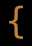
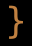

ベースアイテム一覧 / Base Item List
ベースアイテム定義は、変愚蛮怒に登場するすべての「素の」アイテム種別（全643種）を定義します。武器・防具・薬・巻物・魔法棒・杖・ロッド・指輪・アミュレット・魔法書・食料など、ゲーム内のあらゆる物品の基礎データがここに含まれます。各エントリは表示記号と色、種別（tval/sval）、出現階層と重量・売値、武器のダメージダイスや防具のAC、命中・ダメージ補正、そして能力フラグや発動能力を持ちます。エゴアイテムやアーティファクトは、これらのベースアイテムを土台として生成されます。
補足: 実データには全エントリに symbol（表示文字と色）フィールドが存在しますが、これはスキーマ (BaseitemDefinitions.schema.json) には未記載です。本表では @symbol 列として扱います。
Baseitem definitions describe every "plain" item kind in Hengband (643 in total). This is the foundational data for all in-game objects — weapons, armor, potions, scrolls, wands, staves, rods, rings, amulets, spellbooks, food and more. Each entry carries a display symbol and color, its type/subtype (tval/sval), its native depth, weight and cost, damage dice for weapons or AC for armor, plus-to-hit / plus-to-dam / plus-to-ac bonuses, and any innate ability flags or activation power. Ego items and artifacts are generated on top of these base items.
Note: every real entry contains a symbol field (display character + color) that is absent from the authoritative schema (BaseitemDefinitions.schema.json); it is surfaced here as the @symbol column.
骨/Skeleton (tval 1)
| ID / ID | 記号 / Sym | 名前 / Name | 種別 / Type | 副種別 / Sub | 階層 / Lvl | 希少度 / Rarity | 重量 / Wt | 価格 / Cost | ダイス / Dice | AC / AC | 補正 / Bonuses | パラメータ / Pval | フラグ / Flags | 発動 / Activate | 未鑑定名 / Flavor |
|---|---|---|---|---|---|---|---|---|---|---|---|---|---|---|---|
| 391 | 頭蓋骨の破片 Broken Skull |
骨/Skeleton | 1 | 0 | 0:1 | 1 | 0 | 1d1 | 0 | 0 | |||||
| 392 | 骨の破片 Broken Bone |
骨/Skeleton | 2 | 0 | 0:1 | 2 | 0 | 1d1 | 0 | 0 | |||||
| 394 | ネズミの骨 Rodent Skeleton |
骨/Skeleton | 3 | 1 | 1:1 | 10 | 0 | 1d1 | 0 | 0 | |||||
| 393 | 犬の骨 Canine Skeleton |
骨/Skeleton | 4 | 1 | 1:1 | 10 | 0 | 1d1 | 0 | 0 | |||||
| 398 | ノームの骨 Gnome Skeleton |
骨/Skeleton | 5 | 5 | 5:1 | 30 | 0 | 1d2 | 0 | 0 | |||||
| 397 | エルフの骨 Elf Skeleton |
骨/Skeleton | 6 | 5 | 5:1 | 40 | 0 | 1d2 | 0 | 0 | |||||
| 396 | ドワーフの骨 Dwarf Skeleton |
骨/Skeleton | 7 | 5 | 5:1 | 50 | 0 | 1d2 | 0 | 0 | |||||
| 395 | 人間の骨 Human Skeleton |
骨/Skeleton | 8 | 5 | 5:1 | 60 | 0 | 1d2 | 0 | 0 |
空きビン/Bottle (tval 2)
| ID / ID | 記号 / Sym | 名前 / Name | 種別 / Type | 副種別 / Sub | 階層 / Lvl | 希少度 / Rarity | 重量 / Wt | 価格 / Cost | ダイス / Dice | AC / AC | 補正 / Bonuses | パラメータ / Pval | フラグ / Flags | 発動 / Activate | 未鑑定名 / Flavor |
|---|---|---|---|---|---|---|---|---|---|---|---|---|---|---|---|
| 349 | 空のビン Empty Bottle |
空きビン/Bottle | 1 | 0 | 0:1 | 2 | 1 | 1d1 | 0 | 0 |
がらくた/Junk (tval 3)
| ID / ID | 記号 / Sym | 名前 / Name | 種別 / Type | 副種別 / Sub | 階層 / Lvl | 希少度 / Rarity | 重量 / Wt | 価格 / Cost | ダイス / Dice | AC / AC | 補正 / Bonuses | パラメータ / Pval | フラグ / Flags | 発動 / Activate | 未鑑定名 / Flavor |
|---|---|---|---|---|---|---|---|---|---|---|---|---|---|---|---|
| 389 | 陶器のかけら Shard of Pottery |
がらくた/Junk | 3 | 0 | 0:1 | 5 | 0 | 1d1 | 0 | 0 | |||||
| 390 | 折れた棒 Broken Stick |
がらくた/Junk | 6 | 0 | 0:1 | 3 | 0 | 1d1 | 0 | 0 |
笛/Whistle (tval 4)
| ID / ID | 記号 / Sym | 名前 / Name | 種別 / Type | 副種別 / Sub | 階層 / Lvl | 希少度 / Rarity | 重量 / Wt | 価格 / Cost | ダイス / Dice | AC / AC | 補正 / Bonuses | パラメータ / Pval | フラグ / Flags | 発動 / Activate | 未鑑定名 / Flavor |
|---|---|---|---|---|---|---|---|---|---|---|---|---|---|---|---|
| 651 | 魔法の笛 Magic Whistle |
笛/Whistle | 1 | 15 | 15:2 | 3 | 1000 | 0 | ペット呼び寄せ/Whistle (call pet) |
くさび/Spike (tval 5)
| ID / ID | 記号 / Sym | 名前 / Name | 種別 / Type | 副種別 / Sub | 階層 / Lvl | 希少度 / Rarity | 重量 / Wt | 価格 / Cost | ダイス / Dice | AC / AC | 補正 / Bonuses | パラメータ / Pval | フラグ / Flags | 発動 / Activate | 未鑑定名 / Flavor |
|---|---|---|---|---|---|---|---|---|---|---|---|---|---|---|---|
| 345 | 鉄のくさび Iron Spike |
くさび/Spike | 0 | 1 | 1:1 | 10 | 1 | 1d1 | 0 | 0 |
箱/Chest (tval 7)
| ID / ID | 記号 / Sym | 名前 / Name | 種別 / Type | 副種別 / Sub | 階層 / Lvl | 希少度 / Rarity | 重量 / Wt | 価格 / Cost | ダイス / Dice | AC / AC | 補正 / Bonuses | パラメータ / Pval | フラグ / Flags | 発動 / Activate | 未鑑定名 / Flavor |
|---|---|---|---|---|---|---|---|---|---|---|---|---|---|---|---|
| 344 | あばかれた箱 Ruined chest |
箱/Chest | 0 | 0 | 75:2 | 250 | 0 | 0 | |||||||
| 338 | 小さな木の箱 Small wooden chest |
箱/Chest | 1 | 5 | 5:2 | 250 | 20 | 2d3 | 0 | 0 | |||||
| 340 | 小さな鉄の箱 Small iron chest |
箱/Chest | 2 | 25 | 25:2 | 300 | 100 | 2d4 | 0 | 0 | |||||
| 342 | 小さな鋼鉄の箱 Small steel chest |
箱/Chest | 3 | 45 | 45:2 | 500 | 200 | 2d4 | 0 | 0 | |||||
| 339 | 大きな木の箱 Large wooden chest |
箱/Chest | 5 | 15 | 15:2 | 500 | 60 | 2d5 | 0 | 0 | |||||
| 341 | 大きな鉄の箱 Large iron chest |
箱/Chest | 6 | 35 | 35:2 | 1000 | 150 | 2d6 | 0 | 0 | |||||
| 343 | 大きな鋼鉄の箱 Large steel chest |
箱/Chest | 7 | 55 | 55:2 | 1000 | 250 | 2d6 | 0 | 0 | |||||
| 620 | おもちゃのカンヅメ Can of Toys |
箱/Chest | 50 | 1 | 1:255 | 50 | 500000 | 0 | 酸で劣化しない, 電撃で劣化しない, 火炎で劣化しない, 冷気で劣化しない |
人形/Magical Figurine (tval 8)
| ID / ID | 記号 / Sym | 名前 / Name | 種別 / Type | 副種別 / Sub | 階層 / Lvl | 希少度 / Rarity | 重量 / Wt | 価格 / Cost | ダイス / Dice | AC / AC | 補正 / Bonuses | パラメータ / Pval | フラグ / Flags | 発動 / Activate | 未鑑定名 / Flavor |
|---|---|---|---|---|---|---|---|---|---|---|---|---|---|---|---|
| 567 | #の人形 Magical Figurine of # |
人形/Magical Figurine | 0 | 32 | 15:6, 30:3, 65:1 | 50 | 100 | 1d1 | 0 | 0 |
像/Statue (tval 9)
| ID / ID | 記号 / Sym | 名前 / Name | 種別 / Type | 副種別 / Sub | 階層 / Lvl | 希少度 / Rarity | 重量 / Wt | 価格 / Cost | ダイス / Dice | AC / AC | 補正 / Bonuses | パラメータ / Pval | フラグ / Flags | 発動 / Activate | 未鑑定名 / Flavor |
|---|---|---|---|---|---|---|---|---|---|---|---|---|---|---|---|
| 568 | #の木の像 Wooden Statue of # |
像/Statue | 0 | 5 | 5:3 | 200 | 75 | 1d1 | 0 | 0 | |||||
| 569 | #の粘土像 Clay Statue of # |
像/Statue | 1 | 10 | 10:3 | 500 | 50 | 1d1 | 0 | 0 | |||||
| 570 | #の石像 Stone Statue of # |
像/Statue | 2 | 15 | 15:3 | 500 | 100 | 1d1 | 0 | 0 | |||||
| 571 | #の鉄の像 Iron Statue of # |
像/Statue | 3 | 20 | 20:3 | 500 | 200 | 1d1 | 0 | 0 | |||||
| 572 | #の銅像 Copper Statue of # |
像/Statue | 4 | 25 | 25:3 | 500 | 500 | 1d1 | 0 | 0 | |||||
| 573 | #の銀の像 Silver Statue of # |
像/Statue | 5 | 30 | 30:3 | 500 | 1000 | 1d1 | 0 | 0 | |||||
| 574 | #の金の像 Golden Statue of # |
像/Statue | 6 | 40 | 40:3 | 500 | 2500 | 1d1 | 0 | 0 | |||||
| 575 | #の象牙の像 Ivory Statue of # |
像/Statue | 7 | 45 | 45:3 | 500 | 2000 | 1d1 | 0 | 0 | |||||
| 576 | #のミスリル像 Mithril Statue of # |
像/Statue | 8 | 80 | 80:3 | 500 | 10000 | 1d1 | 0 | 0 | |||||
| 577 | #の装飾された像 Ornate Statue of # |
像/Statue | 9 | 50 | 50:3 | 500 | 5000 | 1d1 | 0 | 0 | |||||
| 643 | #の写真 Photograph of # |
像/Statue | 50 | 0 | 0:255 | 1 | 0 | 1d1 | 0 | 0 |
死体/Corpse/Remains (tval 10)
| ID / ID | 記号 / Sym | 名前 / Name | 種別 / Type | 副種別 / Sub | 階層 / Lvl | 希少度 / Rarity | 重量 / Wt | 価格 / Cost | ダイス / Dice | AC / AC | 補正 / Bonuses | パラメータ / Pval | フラグ / Flags | 発動 / Activate | 未鑑定名 / Flavor |
|---|---|---|---|---|---|---|---|---|---|---|---|---|---|---|---|
| 578 | の骨 Skeleton |
死体/Corpse/Remains | 0 | 1 | 1:2 | 20 | 0 | 1d1 | 0 | 0 | |||||
| 579 | の死体 Corpse |
死体/Corpse/Remains | 1 | 1 | 1:2 | 40 | 0 | 1d1 | 0 | 0 |
モンスター・ボール/Capture Ball (tval 11)
| ID / ID | 記号 / Sym | 名前 / Name | 種別 / Type | 副種別 / Sub | 階層 / Lvl | 希少度 / Rarity | 重量 / Wt | 価格 / Cost | ダイス / Dice | AC / AC | 補正 / Bonuses | パラメータ / Pval | フラグ / Flags | 発動 / Activate | 未鑑定名 / Flavor |
|---|---|---|---|---|---|---|---|---|---|---|---|---|---|---|---|
| 593 | モンスター・ボール# Capture Ball# |
モンスター・ボール/Capture Ball | 0 | 15 | 15:4 | 120 | 1000 | 1d1 | 0 | 0 | モンスター捕獲/Capture monster |
弾/Shots (tval 16)
| ID / ID | 記号 / Sym | 名前 / Name | 種別 / Type | 副種別 / Sub | 階層 / Lvl | 希少度 / Rarity | 重量 / Wt | 価格 / Cost | ダイス / Dice | AC / AC | 補正 / Bonuses | パラメータ / Pval | フラグ / Flags | 発動 / Activate | 未鑑定名 / Flavor |
|---|---|---|---|---|---|---|---|---|---|---|---|---|---|---|---|
| 82 | 丸い小石 Rounded Pebble |
弾/Shots | 0 | 0 | 0:1 | 4 | 1 | 1d2 | 0 | 0 | |||||
| 83 | 鉄弾 Iron Shot |
弾/Shots | 1 | 3 | 3:1 | 5 | 2 | 1d3 | 0 | 0 | |||||
| 196 | ミスリルの弾 Mithril Shot |
弾/Shots | 2 | 25 | 30:3 | 5 | 15 | 4d3 | 0 | 0 | 酸で劣化しない, 冷気で劣化しない, 火炎で劣化しない, 電撃で劣化しない |
矢/Arrows (tval 17)
| ID / ID | 記号 / Sym | 名前 / Name | 種別 / Type | 副種別 / Sub | 階層 / Lvl | 希少度 / Rarity | 重量 / Wt | 価格 / Cost | ダイス / Dice | AC / AC | 補正 / Bonuses | パラメータ / Pval | フラグ / Flags | 発動 / Activate | 未鑑定名 / Flavor |
|---|---|---|---|---|---|---|---|---|---|---|---|---|---|---|---|
| 78 |  |
矢 Arrow |
矢/Arrows | 1 | 3 | 3:1, 15:1 | 2 | 1 | 1d4 | 0 | 0 | ||||
| 79 | 追尾の矢 Seeker Arrow |
矢/Arrows | 2 | 55 | 55:3 | 2 | 20 | 6d4 | 0 | 0 | 酸で劣化しない, 冷気で劣化しない, 火炎で劣化しない, 電撃で劣化しない | ||||
| 195 | 束矢 Sheaf Arrow |
矢/Arrows | 3 | 10 | 20:4, 40:2, 50:2 | 4 | 3 | 2d4 | 0 | 0 | |||||
| 293 | 細矢 Flight Arrow |
矢/Arrows | 4 | 3 | 3:2 | 1 | 1 | 1d3 | 0 | 0 | |||||
| 613 | 矢 Black Arrow |
矢/Arrows | 10 | 35 | 2 | 1 | 1d4 | 0 | 0 | 即アーティファクト化 |
クロスボウの矢/Bolts (tval 18)
| ID / ID | 記号 / Sym | 名前 / Name | 種別 / Type | 副種別 / Sub | 階層 / Lvl | 希少度 / Rarity | 重量 / Wt | 価格 / Cost | ダイス / Dice | AC / AC | 補正 / Bonuses | パラメータ / Pval | フラグ / Flags | 発動 / Activate | 未鑑定名 / Flavor |
|---|---|---|---|---|---|---|---|---|---|---|---|---|---|---|---|
| 80 | クロスボウの矢 Bolt |
クロスボウの矢/Bolts | 1 | 3 | 3:1, 25:1 | 3 | 2 | 1d5 | 0 | 0 | |||||
| 81 | 追尾クロスボウの矢 Seeker Bolt |
クロスボウの矢/Bolts | 2 | 65 | 65:4 | 3 | 25 | 6d5 | 0 | 0 | 酸で劣化しない, 冷気で劣化しない, 火炎で劣化しない, 電撃で劣化しない | ||||
| 619 | 鋼鉄のクロスボウの矢 Steel Bolt |
クロスボウの矢/Bolts | 3 | 10 | 25:4, 50:2, 60:2 | 4 | 10 | 3d5 | 0 | 0 |
弓/Bow (tval 19)
| ID / ID | 記号 / Sym | 名前 / Name | 種別 / Type | 副種別 / Sub | 階層 / Lvl | 希少度 / Rarity | 重量 / Wt | 価格 / Cost | ダイス / Dice | AC / AC | 補正 / Bonuses | パラメータ / Pval | フラグ / Flags | 発動 / Activate | 未鑑定名 / Flavor |
|---|---|---|---|---|---|---|---|---|---|---|---|---|---|---|---|
| 77 | スリング Sling |
弓/Bow | 2 | 1 | 1:1 | 5 | 5 | 0 | |||||||
| 73 |  |
ショート・ボウ Short Bow |
弓/Bow | 12 | 3 | 3:1 | 30 | 50 | 0 | ||||||
| 74 | ロング・ボウ Long Bow |
弓/Bow | 13 | 30 | 30:2, 40:2 | 40 | 400 | 0 | |||||||
| 75 | ライト・クロスボウ Light Crossbow |
弓/Bow | 23 | 10 | 10:1 | 110 | 140 | 0 | |||||||
| 76 | ヘヴィ・クロスボウ Heavy Crossbow |
弓/Bow | 24 | 30 | 30:2, 40:2 | 200 | 500 | 0 | |||||||
| 588 | 進化する銃 Gun |
弓/Bow | 50 | 15 | 100 | 1000 | 0 | 即アーティファクト化 | |||||||
| 671 | ハープ Harp |
弓/Bow | 51 | 20 | 0 | 2000 | 0 | 即アーティファクト化 | |||||||
| 622 | 弓 Yumi |
弓/Bow | 63 | 1 | 50 | 1000000 | 0 | 即アーティファクト化 |
シャベル/つるはし/Digger (tval 20)
| ID / ID | 記号 / Sym | 名前 / Name | 種別 / Type | 副種別 / Sub | 階層 / Lvl | 希少度 / Rarity | 重量 / Wt | 価格 / Cost | ダイス / Dice | AC / AC | 補正 / Bonuses | パラメータ / Pval | フラグ / Flags | 発動 / Activate | 未鑑定名 / Flavor |
|---|---|---|---|---|---|---|---|---|---|---|---|---|---|---|---|
| 84 | シャベル Shovel |
シャベル/つるはし/Digger | 1 | 1 | 5:16 | 60 | 10 | 1d2 | 0 | 1 | 採掘 | ||||
| 85 | ノームのシャベル Gnomish Shovel |
シャベル/つるはし/Digger | 2 | 20 | 15:4 | 60 | 100 | 1d2 | 0 | 2 | 採掘 | ||||
| 86 | ドワーフのシャベル Dwarven Shovel |
シャベル/つるはし/Digger | 3 | 40 | 20:1 | 120 | 200 | 1d3 | 0 | 3 | 採掘 | ||||
| 87 | つるはし Pick |
シャベル/つるはし/Digger | 4 | 5 | 10:16 | 150 | 50 | 1d3 | 0 | 1 | 採掘 | ||||
| 88 | オークのつるはし Orcish Pick |
シャベル/つるはし/Digger | 5 | 30 | 15:4 | 150 | 300 | 1d3 | 0 | 2 | 採掘 | ||||
| 89 | ドワーフのつるはし Dwarven Pick |
シャベル/つるはし/Digger | 6 | 50 | 20:1 | 200 | 600 | 1d4 | 0 | 3 | 採掘 | ||||
| 28 | 戦闘用つるはし Mattock |
シャベル/つるはし/Digger | 7 | 50 | 30:1 | 250 | 700 | 1d8 | 0 | 2 | 採掘 |
鈍器/Hafted Weapon (tval 21)
| ID / ID | 記号 / Sym | 名前 / Name | 種別 / Type | 副種別 / Sub | 階層 / Lvl | 希少度 / Rarity | 重量 / Wt | 価格 / Cost | ダイス / Dice | AC / AC | 補正 / Bonuses | パラメータ / Pval | フラグ / Flags | 発動 / Activate | 未鑑定名 / Flavor |
|---|---|---|---|---|---|---|---|---|---|---|---|---|---|---|---|
| 542 | 棍棒 Club |
鈍器/Hafted Weapon | 1 | 0 | 0:1 | 100 | 3 | 1d4 | 0 | 0 | |||||
| 49 | ムチ Whip |
鈍器/Hafted Weapon | 2 | 3 | 3:1 | 30 | 30 | 1d6 | 0 | 0 | |||||
| 54 | クォータースタッフ Quarterstaff |
鈍器/Hafted Weapon | 3 | 10 | 10:1 | 150 | 200 | 1d9 | 0 | 0 | |||||
| 539 | ヌンチャク Nunchaku |
鈍器/Hafted Weapon | 4 | 10 | 10:2 | 60 | 120 | 2d3 | 0 | 0 | |||||
| 53 | メイス Mace |
鈍器/Hafted Weapon | 5 | 5 | 5:1 | 120 | 130 | 2d4 | 0 | 0 | |||||
| 48 | 鎖つき鉄球 Ball-and-Chain |
鈍器/Hafted Weapon | 6 | 10 | 10:1 | 150 | 200 | 2d4 | 0 | 0 | 騎乗武器 | ||||
| 541 | 錫杖 Jo Staff |
鈍器/Hafted Weapon | 7 | 10 | 10:2 | 70 | 200 | 1d7 | 0 | 0 | |||||
| 55 | ウォー・ハンマー War Hammer |
鈍器/Hafted Weapon | 8 | 5 | 5:1 | 120 | 225 | 3d3 | 0 | 0 | 騎乗武器 | ||||
| 529 | 三節棍 Three Piece Rod |
鈍器/Hafted Weapon | 11 | 15 | 15:3 | 120 | 350 | 3d3 | 0 | 0 | |||||
| 52 | モーニング・スター Morning Star |
鈍器/Hafted Weapon | 12 | 10 | 10:1 | 150 | 396 | 2d6 | 0 | 0 | |||||
| 50 | フレイル Flail |
鈍器/Hafted Weapon | 13 | 10 | 10:1 | 150 | 353 | 2d6 | 0 | 0 | 騎乗武器 | ||||
| 540 | 六尺棒 Bo Staff |
鈍器/Hafted Weapon | 14 | 15 | 15:1 | 160 | 310 | 1d11 | 0 | 0 | |||||
| 56 | 鉛詰めメイス Lead-Filled Mace |
鈍器/Hafted Weapon | 15 | 15 | 15:1 | 180 | 502 | 3d4 | 0 | 0 | |||||
| 538 | 鉄棒 Tetsubo |
鈍器/Hafted Weapon | 16 | 25 | 15:2 | 190 | 570 | 2d7 | 0 | 0 | |||||
| 51 | ヘヴィ・フレイル Two-Handed Flail |
鈍器/Hafted Weapon | 18 | 45 | 20:1 | 280 | 590 | 3d6 | 0 | 0 | |||||
| 399 | グレート・ハンマー Great Hammer |
鈍器/Hafted Weapon | 19 | 45 | 30:3 | 300 | 350 | 4d6 | 0 | 0 | |||||
| 57 | 粉砕のメイス Mace of Disruption |
鈍器/Hafted Weapon | 20 | 80 | 80:8 | 400 | 4300 | 5d8 | 0 | 0 | SLAY_UNDEAD | ||||
| 581 | 魔術師の杖 Wizardstaff |
鈍器/Hafted Weapon | 21 | 25 | 25:4, 50:4 | 40 | 4000 | 1d2 | 0 | 0 | DEC_MANA | ||||
| 498 | 冥界の大鉄杖 Mighty Hammer |
鈍器/Hafted Weapon | 50 | 15 | 200 | 1000 | 3d9 | 0 | 0 | 即アーティファクト化, 騎乗武器 | |||||
| 621 | 棒 Stick |
鈍器/Hafted Weapon | 63 | 1 | 333 | 1000000 | 0 | 即アーティファクト化 |
長柄/斧/Polearm (tval 22)
| ID / ID | 記号 / Sym | 名前 / Name | 種別 / Type | 副種別 / Sub | 階層 / Lvl | 希少度 / Rarity | 重量 / Wt | 価格 / Cost | ダイス / Dice | AC / AC | 補正 / Bonuses | パラメータ / Pval | フラグ / Flags | 発動 / Activate | 未鑑定名 / Flavor |
|---|---|---|---|---|---|---|---|---|---|---|---|---|---|---|---|
| 533 | ハチェット Hatchet |
長柄/斧/Polearm | 1 | 5 | 5:3 | 60 | 120 | 1d5 | 0 | 0 | |||||
| 64 | スピア Spear |
長柄/斧/Polearm | 2 | 5 | 5:1 | 50 | 36 | 1d6 | 0 | 0 | 騎乗武器 | ||||
| 537 | 鎌 Sickle |
長柄/斧/Polearm | 3 | 5 | 5:3 | 70 | 110 | 2d3 | 0 | 0 | |||||
| 62 | オウル・パイク Awl-Pike |
長柄/斧/Polearm | 4 | 10 | 10:1 | 160 | 340 | 1d8 | 0 | 0 | |||||
| 65 | トライデント Trident |
長柄/斧/Polearm | 5 | 5 | 5:1 | 70 | 120 | 1d8 | 0 | 0 | 騎乗武器 | ||||
| 551 | フォシャール Fauchard |
長柄/斧/Polearm | 6 | 10 | 10:2 | 155 | 301 | 1d10 | 0 | 0 | 騎乗武器 | ||||
| 543 | ブロード・スピア Broad Spear |
長柄/斧/Polearm | 7 | 10 | 10:1 | 100 | 240 | 1d9 | 0 | 0 | 騎乗武器 | ||||
| 63 | パイク Pike |
長柄/斧/Polearm | 8 | 15 | 10:1 | 160 | 358 | 2d5 | 0 | 0 | |||||
| 550 | 薙刀 Naginata |
長柄/斧/Polearm | 9 | 15 | 15:2 | 150 | 408 | 2d6 | 0 | 0 | |||||
| 59 | ビークド・アックス Beaked Axe |
長柄/斧/Polearm | 10 | 15 | 15:1 | 120 | 408 | 2d6 | 0 | 0 | |||||
| 70 | ブロード・アックス Broad Axe |
長柄/斧/Polearm | 11 | 15 | 15:1 | 130 | 304 | 2d6 | 0 | 0 | |||||
| 58 | ルツェルン・ハンマー Lucerne Hammer |
長柄/斧/Polearm | 12 | 10 | 10:1 | 120 | 376 | 2d5 | 0 | 0 | |||||
| 60 | グレイブ Glaive |
長柄/斧/Polearm | 13 | 20 | 15:1 | 190 | 363 | 2d6 | 0 | 0 | 騎乗武器 | ||||
| 532 | ラジャタン Lajatang |
長柄/斧/Polearm | 14 | 25 | 15:2 | 175 | 330 | 2d7 | 0 | 0 | |||||
| 61 | ハルベルト Halberd |
長柄/斧/Polearm | 15 | 25 | 15:1 | 190 | 430 | 3d5 | 0 | 0 | |||||
| 552 | ギザルム Guisarme |
長柄/斧/Polearm | 16 | 10 | 10:1 | 165 | 320 | 2d5 | 0 | 0 | |||||
| 71 | 大鎌 Scythe |
長柄/斧/Polearm | 17 | 45 | 20:1 | 250 | 800 | 5d3 | 0 | 0 | |||||
| 66 | ランス Lance |
長柄/斧/Polearm | 20 | 10 | 10:1 | 300 | 230 | 2d8 | 0 | 0 | 騎乗武器 | ||||
| 68 | バトル・アックス Battle Axe |
長柄/斧/Polearm | 22 | 15 | 15:1 | 170 | 334 | 2d8 | 0 | 0 | |||||
| 67 | グレート・アックス Great Axe |
長柄/斧/Polearm | 25 | 40 | 20:1 | 230 | 500 | 4d4 | 0 | 0 | |||||
| 528 | 三叉槍 Trifurcate Spear |
長柄/斧/Polearm | 26 | 35 | 20:3 | 140 | 400 | 2d9 | 0 | 0 | 騎乗武器 | ||||
| 69 | ロッホアーバー・アックス Lochaber Axe |
長柄/斧/Polearm | 28 | 45 | 20:1 | 250 | 750 | 3d8 | 0 | 0 | |||||
| 553 | ヘヴィ・ランス Heavy Lance |
長柄/斧/Polearm | 29 | 43 | 30:4 | 400 | 700 | 4d8 | 0 | 0 | 騎乗武器 | ||||
| 72 | 切り裂きの大鎌 Scythe of Slicing |
長柄/斧/Polearm | 30 | 60 | 60:4 | 250 | 3500 | 8d4 | 0 | 0 | 騎乗武器 | ||||
| 615 | 釣り竿 Fishingpole |
長柄/斧/Polearm | 40 | 10 | 30 | 30 | 1d1 | 0 | 0 | 即アーティファクト化 | |||||
| 594 | 死の大鎌 Death Scythe |
長柄/斧/Polearm | 50 | 70 | 70:6 | 350 | 10000 | 10d10 | 0 | (-50,+30) | 0 | 切れ味, 呪い, HEAVY_CURSE, SLAY_DRAGON, SLAY_ANIMAL, 邪悪倍打, SLAY_HUMAN, VAMPIRIC, SLAY_UNDEAD, SLAY_DEMON, SLAY_TROLL, SLAY_GIANT, SLAY_ORC, BRAND_FIRE, BRAND_ELEC, BRAND_COLD, BRAND_ACID, BRAND_POIS, 酸で劣化しない, 電撃で劣化しない, 火炎で劣化しない, 冷気で劣化しない, 騎乗武器 |
刀剣/Sword (tval 23)
| ID / ID | 記号 / Sym | 名前 / Name | 種別 / Type | 副種別 / Sub | 階層 / Lvl | 希少度 / Rarity | 重量 / Wt | 価格 / Cost | ダイス / Dice | AC / AC | 補正 / Bonuses | パラメータ / Pval | フラグ / Flags | 発動 / Activate | 未鑑定名 / Flavor |
|---|---|---|---|---|---|---|---|---|---|---|---|---|---|---|---|
| 30 | 折れたダガー Broken Dagger |
刀剣/Sword | 1 | 0 | 0:1 | 5 | 1 | 1d1 | 0 | (-2,-4) | 0 | ||||
| 47 | 折れた剣 Broken Sword |
刀剣/Sword | 2 | 0 | 0:1 | 30 | 2 | 1d2 | 0 | (-2,-4) | 0 | ||||
| 43 | ダガー Dagger |
刀剣/Sword | 4 | 0 | 0:1, 20:1 | 12 | 10 | 1d4 | 0 | 0 | |||||
| 38 | マン・ゴーシュ Main Gauche |
刀剣/Sword | 5 | 3 | 3:1 | 30 | 25 | 1d5 | 0 | 0 | SUPPORTIVE | ||||
| 525 | 短刀 Tanto |
刀剣/Sword | 6 | 3 | 3:2 | 20 | 30 | 1d5 | 0 | 0 | |||||
| 44 | レイピア Rapier |
刀剣/Sword | 7 | 5 | 5:1 | 40 | 42 | 1d6 | 0 | 0 | |||||
| 46 | スモール・ソード Small Sword |
刀剣/Sword | 8 | 5 | 5:1 | 75 | 48 | 1d6 | 0 | 0 | |||||
| 554 | バゼラード Basillard |
刀剣/Sword | 9 | 10 | 10:3 | 80 | 220 | 1d8 | 0 | 0 | |||||
| 35 | ショート・ソード Short Sword |
刀剣/Sword | 10 | 5 | 5:1 | 80 | 90 | 1d7 | 0 | 0 | |||||
| 45 | サーベル Sabre |
刀剣/Sword | 11 | 5 | 5:1 | 50 | 50 | 1d7 | 0 | 0 | 騎乗武器 | ||||
| 39 | カットラス Cutlass |
刀剣/Sword | 12 | 5 | 5:1 | 110 | 85 | 1d7 | 0 | 0 | |||||
| 549 | 脇差し Wakizashi |
刀剣/Sword | 13 | 10 | 10:3 | 90 | 210 | 2d4 | 0 | 0 | SUPPORTIVE | ||||
| 544 | コペシュ Khopesh |
刀剣/Sword | 14 | 10 | 10:2 | 130 | 190 | 2d4 | 0 | 0 | |||||
| 33 | タルワール Tulwar |
刀剣/Sword | 15 | 5 | 5:1 | 100 | 200 | 2d4 | 0 | 0 | 騎乗武器 | ||||
| 34 | ブロード・ソード Broad Sword |
刀剣/Sword | 16 | 10 | 10:1, 15:1 | 150 | 255 | 2d5 | 0 | 0 | 騎乗武器 | ||||
| 42 | ロング・ソード Long Sword |
刀剣/Sword | 17 | 10 | 10:1, 20:1 | 130 | 300 | 2d5 | 0 | 0 | 騎乗武器 | ||||
| 32 | シミター Scimitar |
刀剣/Sword | 18 | 10 | 10:1 | 130 | 250 | 2d5 | 0 | 0 | |||||
| 555 | 忍者刀 Ninjato |
刀剣/Sword | 19 | 10 | 10:3 | 100 | 265 | 1d9 | 0 | 0 | |||||
| 41 | カタナ Katana |
刀剣/Sword | 20 | 20 | 15:1 | 120 | 400 | 3d4 | 0 | 0 | |||||
| 31 | バスタード・ソード Bastard Sword |
刀剣/Sword | 21 | 15 | 15:1 | 140 | 350 | 3d4 | 0 | 0 | |||||
| 548 | 青龍刀 Falchion |
刀剣/Sword | 22 | 40 | 30:3 | 240 | 500 | 4d5 | 0 | 0 | 騎乗武器 | ||||
| 546 | クレイモア Claymore |
刀剣/Sword | 23 | 40 | 30:2 | 200 | 600 | 2d8 | 0 | 0 | |||||
| 547 | エスパドン Espadon |
刀剣/Sword | 24 | 40 | 30:3 | 200 | 600 | 2d9 | 0 | 0 | |||||
| 37 | グレート・ソード Two-Handed Sword |
刀剣/Sword | 25 | 30 | 20:1, 40:1 | 200 | 775 | 3d6 | 0 | 0 | |||||
| 545 | フランベルジュ Flamberge |
刀剣/Sword | 26 | 40 | 30:2 | 230 | 600 | 3d7 | 0 | 0 | |||||
| 29 | 野太刀 No-dachi |
刀剣/Sword | 27 | 35 | 20:3 | 190 | 579 | 5d4 | 0 | 0 | |||||
| 40 | 首切りソード Executioner's Sword |
刀剣/Sword | 28 | 40 | 20:1 | 260 | 850 | 4d5 | 0 | 0 | |||||
| 524 | ツヴァイハンダー Zweihander |
刀剣/Sword | 29 | 40 | 30:3 | 280 | 580 | 4d6 | 0 | 0 | |||||
| 36 | カオス・ブレード Blade of Chaos |
刀剣/Sword | 30 | 70 | 70:8 | 180 | 4000 | 6d5 | 0 | 0 | 耐カオス | ||||
| 565 | ダイヤモンド・エッジ Diamond Edge |
刀剣/Sword | 31 | 90 | 90:16 | 150 | 50000 | 7d5 | 0 | (+10,+10) | 4 | 切れ味, 採掘 | |||
| 592 | 毒針 Poison Needle |
刀剣/Sword | 32 | 0 | 30:6 | 5 | 2000 | 1d1 | 0 | 0 | 酸で劣化しない, 電撃で劣化しない, 火炎で劣化しない, 冷気で劣化しない | ||||
| 635 | 隼の剣 Falcon Sword |
刀剣/Sword | 33 | 55 | 65:8 | 30 | 3500 | 1d6 | 0 | 1 | BLOWS |
靴/Boots (tval 30)
| ID / ID | 記号 / Sym | 名前 / Name | 種別 / Type | 副種別 / Sub | 階層 / Lvl | 希少度 / Rarity | 重量 / Wt | 価格 / Cost | ダイス / Dice | AC / AC | 補正 / Bonuses | パラメータ / Pval | フラグ / Flags | 発動 / Activate | 未鑑定名 / Flavor |
|---|---|---|---|---|---|---|---|---|---|---|---|---|---|---|---|
| 91 | 軟革ブーツ Pair of Soft Leather Boots |
靴/Boots | 2 | 3 | 3:1 | 20 | 7 | 1d1 | 2 | 0 | |||||
| 92 | 硬革ブーツ Pair of Hard Leather Boots |
靴/Boots | 3 | 5 | 5:1 | 40 | 12 | 1d1 | 3 | 0 | |||||
| 585 | ドラゴン・ブーツ Pair of Dragon Boots |
靴/Boots | 4 | 60 | 40:5, 60:5 | 60 | 10000 | 1d3 | 5 | [+10] | 0 | 酸で劣化しない, 火炎で劣化しない, 電撃で劣化しない, 冷気で劣化しない | |||
| 93 | 鉄鋲底の靴 Pair of Metal Shod Boots |
靴/Boots | 6 | 20 | 15:1 | 80 | 50 | 1d1 | 6 | 0 |
籠手/Gloves (tval 31)
| ID / ID | 記号 / Sym | 名前 / Name | 種別 / Type | 副種別 / Sub | 階層 / Lvl | 希少度 / Rarity | 重量 / Wt | 価格 / Cost | ダイス / Dice | AC / AC | 補正 / Bonuses | パラメータ / Pval | フラグ / Flags | 発動 / Activate | 未鑑定名 / Flavor |
|---|---|---|---|---|---|---|---|---|---|---|---|---|---|---|---|
| 125 | 革グローブ Set of Leather Gloves |
籠手/Gloves | 1 | 1 | 1:1 | 5 | 3 | 1 | 0 | ||||||
| 126 | ガントレット Set of Gauntlets |
籠手/Gloves | 2 | 10 | 10:1 | 25 | 35 | 1d1 | 2 | 0 | |||||
| 584 | ドラゴン・グローブ Set of Dragon Gloves |
籠手/Gloves | 3 | 60 | 40:5, 60:5 | 30 | 10000 | 1d3 | 4 | [+10] | 0 | 酸で劣化しない, 火炎で劣化しない, 電撃で劣化しない, 冷気で劣化しない | |||
| 127 | セスタス Set of Cesti |
籠手/Gloves | 5 | 50 | 20:1 | 40 | 100 | 1d1 | 5 | 0 |
兜/Helm (tval 32)
| ID / ID | 記号 / Sym | 名前 / Name | 種別 / Type | 副種別 / Sub | 階層 / Lvl | 希少度 / Rarity | 重量 / Wt | 価格 / Cost | ダイス / Dice | AC / AC | 補正 / Bonuses | パラメータ / Pval | フラグ / Flags | 発動 / Activate | 未鑑定名 / Flavor |
|---|---|---|---|---|---|---|---|---|---|---|---|---|---|---|---|
| 94 | 硬革帽子 Hard Leather Cap |
兜/Helm | 2 | 3 | 3:1 | 15 | 12 | 2 | 0 | ||||||
| 95 | 金属帽子 Metal Cap |
兜/Helm | 3 | 10 | 10:1 | 20 | 30 | 1d1 | 3 | 0 | |||||
| 562 | 陣笠 Jingasa |
兜/Helm | 4 | 15 | 15:2 | 30 | 60 | 1d2 | 4 | 0 | |||||
| 96 | 鉄ヘルメット Iron Helm |
兜/Helm | 5 | 20 | 15:1 | 75 | 75 | 1d3 | 5 | 0 | |||||
| 97 | 鋼鉄ヘルメット Steel Helm |
兜/Helm | 6 | 40 | 20:1 | 60 | 200 | 1d3 | 6 | 0 | |||||
| 413 | ドラゴン・ヘルム Dragon Helm |
兜/Helm | 7 | 60 | 40:5, 60:5 | 50 | 10000 | 1d3 | 8 | [+10] | 0 | 酸で劣化しない, 火炎で劣化しない, 電撃で劣化しない, 冷気で劣化しない | |||
| 560 | 星兜 Kabuto |
兜/Helm | 8 | 35 | 20:3 | 80 | 300 | 1d2 | 7 | 0 |
冠/Crown (tval 33)
| ID / ID | 記号 / Sym | 名前 / Name | 種別 / Type | 副種別 / Sub | 階層 / Lvl | 希少度 / Rarity | 重量 / Wt | 価格 / Cost | ダイス / Dice | AC / AC | 補正 / Bonuses | パラメータ / Pval | フラグ / Flags | 発動 / Activate | 未鑑定名 / Flavor |
|---|---|---|---|---|---|---|---|---|---|---|---|---|---|---|---|
| 98 | 鉄冠 Iron Crown |
冠/Crown | 10 | 40 | 15:1 | 20 | 500 | 1d1 | 0 | 0 | |||||
| 99 | 金の冠 Golden Crown |
冠/Crown | 11 | 45 | 25:1 | 30 | 1000 | 1d1 | 0 | 0 | 酸で劣化しない | ||||
| 100 | 宝冠 Jewel Encrusted Crown |
冠/Crown | 12 | 50 | 50:1 | 40 | 2000 | 1d1 | 0 | 0 | 酸で劣化しない | ||||
| 499 | 堂々たる鉄冠 Massive Iron Crown |
冠/Crown | 50 | 44 | 20 | 1000 | 1d1 | 0 | 0 | 即アーティファクト化 |
盾/Shield (tval 34)
| ID / ID | 記号 / Sym | 名前 / Name | 種別 / Type | 副種別 / Sub | 階層 / Lvl | 希少度 / Rarity | 重量 / Wt | 価格 / Cost | ダイス / Dice | AC / AC | 補正 / Bonuses | パラメータ / Pval | フラグ / Flags | 発動 / Activate | 未鑑定名 / Flavor |
|---|---|---|---|---|---|---|---|---|---|---|---|---|---|---|---|
| 128 | 革製スモール・シールド Small Leather Shield |
盾/Shield | 2 | 3 | 3:1 | 50 | 15 | 1d1 | 3 | 0 | |||||
| 130 | 金属製スモール・シールド Small Metal Shield |
盾/Shield | 3 | 10 | 10:1 | 65 | 40 | 1d2 | 5 | 0 | |||||
| 129 | 革製ラージ・シールド Large Leather Shield |
盾/Shield | 4 | 15 | 15:1 | 100 | 100 | 1d2 | 6 | 0 | |||||
| 131 | 金属製ラージ・シールド Large Metal Shield |
盾/Shield | 5 | 20 | 20:1 | 120 | 200 | 1d3 | 8 | 0 | |||||
| 414 | ドラゴン・シールド Dragon Shield |
盾/Shield | 6 | 60 | 40:5, 60:5 | 100 | 10000 | 1d3 | 8 | [+10] | 0 | 酸で劣化しない, 火炎で劣化しない, 電撃で劣化しない, 冷気で劣化しない | |||
| 627 | ナイト・シールド Knight's Shield |
盾/Shield | 7 | 40 | 25:2 | 160 | 250 | 1d6 | 10 | 0 | |||||
| 122 | ミラー・シールド Mirror Shield |
盾/Shield | 10 | 70 | 40:8 | 100 | 10000 | 1d1 | 10 | [+10] | 0 | 酸で劣化しない, 反射 | |||
| 612 | 鏡 Mirror |
盾/Shield | 50 | 65 | 50 | 10000 | 1d1 | 0 | [+10] | 0 | 酸で劣化しない, 反射, 即アーティファクト化 |
クローク/Cloak (tval 35)
| ID / ID | 記号 / Sym | 名前 / Name | 種別 / Type | 副種別 / Sub | 階層 / Lvl | 希少度 / Rarity | 重量 / Wt | 価格 / Cost | ダイス / Dice | AC / AC | 補正 / Bonuses | パラメータ / Pval | フラグ / Flags | 発動 / Activate | 未鑑定名 / Flavor |
|---|---|---|---|---|---|---|---|---|---|---|---|---|---|---|---|
| 123 | クローク Cloak |
クローク/Cloak | 1 | 1 | 1:1, 20:1 | 10 | 3 | 1 | 0 | ||||||
| 90 | エルフのクローク Elven Cloak |
クローク/Cloak | 2 | 30 | 30:4 | 5 | 1500 | 4 | [+4] | 1 | 酸で劣化しない, 冷気で劣化しない, 火炎で劣化しない, 電撃で劣化しない, STEALTH, 探索 | ||||
| 531 | 毛皮のクローク Fur Cloak |
クローク/Cloak | 3 | 20 | 20:2, 30:2 | 30 | 200 | 3 | 0 | ||||||
| 672 | 魔法を防ぐクローク Cloak of Magic Resistance |
クローク/Cloak | 4 | 20 | 20:4, 50:4 | 10 | 2500 | 1 | 0 | RES_CURSE | |||||
| 611 | 天上のクローク Ethereal Cloak |
クローク/Cloak | 5 | 50 | 25:8, 50:4 | 0 | 2500 | 0 | [+10] | 0 | LEVITATION, 酸で劣化しない, 電撃で劣化しない, 火炎で劣化しない, 冷気で劣化しない | ||||
| 124 | 影のクローク Shadow Cloak |
クローク/Cloak | 6 | 60 | 30:5, 60:5 | 5 | 7500 | 6 | [+4] | 0 | 耐暗黒, 耐閃光 |
軽鎧/Soft Armor (tval 36)
| ID / ID | 記号 / Sym | 名前 / Name | 種別 / Type | 副種別 / Sub | 階層 / Lvl | 希少度 / Rarity | 重量 / Wt | 価格 / Cost | ダイス / Dice | AC / AC | 補正 / Bonuses | パラメータ / Pval | フラグ / Flags | 発動 / Activate | 未鑑定名 / Flavor |
|---|---|---|---|---|---|---|---|---|---|---|---|---|---|---|---|
| 580 | Ｔシャツ T-shirt |
軽鎧/Soft Armor | 0 | 1 | 1:255 | 10 | 0 | 1d1 | 1 | 0 | |||||
| 102 | 汚れたボロ服 Filthy Rag |
軽鎧/Soft Armor | 1 | 0 | 0:1 | 20 | 1 | 1 | [-1] | 0 | |||||
| 101 | ローブ Robe |
軽鎧/Soft Armor | 2 | 1 | 1:1, 50:1 | 20 | 4 | 2 | 0 | ||||||
| 558 | 紙甲 Paper Armour |
軽鎧/Soft Armor | 3 | 5 | 7:2 | 30 | 50 | 1d1 | 4 | 0 | |||||
| 103 | 軟革よろい Soft Leather Armour |
軽鎧/Soft Armor | 4 | 3 | 3:1 | 80 | 18 | 4 | 0 | ||||||
| 104 | 鋲付軟革よろい Soft Studded Leather |
軽鎧/Soft Armor | 5 | 3 | 3:1 | 90 | 35 | 1d1 | 5 | 0 | |||||
| 105 | 硬革よろい Hard Leather Armour |
軽鎧/Soft Armor | 6 | 5 | 5:1 | 100 | 150 | 1d1 | 6 | (-1,+0) | 0 | ||||
| 106 | 鋲付硬革よろい Hard Studded Leather |
軽鎧/Soft Armor | 7 | 10 | 10:1 | 110 | 200 | 1d2 | 7 | (-1,+0) | 0 | ||||
| 535 | サイ皮よろい Rhino Hide Armour |
軽鎧/Soft Armor | 8 | 15 | 15:1 | 110 | 400 | 1d1 | 8 | (-1,+0) | 0 | ||||
| 557 | 防護服 Cord Armour |
軽鎧/Soft Armor | 9 | 5 | 7:1 | 80 | 200 | 1d1 | 6 | 0 | |||||
| 559 | 厚布よろい Padded Armour |
軽鎧/Soft Armor | 10 | 2 | 5:1 | 60 | 50 | 1d1 | 5 | 0 | |||||
| 107 | 革製スケイル・メイル Leather Scale Mail |
軽鎧/Soft Armor | 11 | 15 | 15:1 | 140 | 450 | 1d1 | 11 | (-1,+0) | 0 | ||||
| 536 | 皮ジャケット Leather Jacket |
軽鎧/Soft Armor | 12 | 20 | 15:3 | 130 | 700 | 1d2 | 12 | (-1,+0) | 0 | ||||
| 653 | 黒装束 Black Clothes |
軽鎧/Soft Armor | 13 | 15 | 40:4 | 80 | 5000 | 1d1 | 4 | [+12] | 1 | STEALTH, 火炎で劣化しない | |||
| 561 | 皮石よろい Stone and Hide Armour |
軽鎧/Soft Armor | 15 | 15 | 15:7 | 200 | 1000 | 1d1 | 15 | (-1,+0) | 0 | ||||
| 614 | 危ない水着 Sexy Swimsuit |
軽鎧/Soft Armor | 50 | 30 | 30:20, 50:8 | 2 | 78000 | 0 | 0 | 酸で劣化しない, 電撃で劣化しない, 火炎で劣化しない, 冷気で劣化しない, AGGRAVATE | |||||
| 645 | ローブ Robe |
軽鎧/Soft Armor | 60 | 1 | 1:255 | 20 | 4 | 0 | 0 | ||||||
| 623 | 服 Clothes |
軽鎧/Soft Armor | 63 | 1 | 10 | 1000000 | 0 | 即アーティファクト化 |
重鎧/Hard Armor (tval 37)
| ID / ID | 記号 / Sym | 名前 / Name | 種別 / Type | 副種別 / Sub | 階層 / Lvl | 希少度 / Rarity | 重量 / Wt | 価格 / Cost | ダイス / Dice | AC / AC | 補正 / Bonuses | パラメータ / Pval | フラグ / Flags | 発動 / Activate | 未鑑定名 / Flavor |
|---|---|---|---|---|---|---|---|---|---|---|---|---|---|---|---|
| 110 | 錆びた鎖かたびら Rusty Chain Mail |
重鎧/Hard Armor | 1 | 25 | 15:1 | 200 | 550 | 1d4 | 14 | (-5,+0) [-8] | 0 | ||||
| 556 | リング・メイル Ring Mail |
重鎧/Hard Armor | 2 | 15 | 15:1 | 200 | 500 | 1d4 | 12 | (-2,+0) | 0 | ||||
| 108 | 金属製スケイル・メイル Metal Scale Mail |
重鎧/Hard Armor | 3 | 25 | 15:1 | 250 | 550 | 1d4 | 13 | (-2,+0) | 0 | ||||
| 109 | 鎖かたびら Chain Mail |
重鎧/Hard Armor | 4 | 25 | 15:1 | 220 | 750 | 1d4 | 14 | (-2,+0) | 0 | ||||
| 170 | 二重リングメイル Double Ring Mail |
重鎧/Hard Armor | 5 | 25 | 15:1 | 230 | 700 | 1d4 | 15 | (-2,+0) | 0 | ||||
| 111 | 重鎖かたびら Augmented Chain Mail |
重鎧/Hard Armor | 6 | 30 | 15:1 | 270 | 900 | 1d4 | 16 | (-2,+0) | 0 | ||||
| 121 | 二重鎖かたびら Double Chain Mail |
重鎧/Hard Armor | 7 | 30 | 15:1 | 250 | 1000 | 1d4 | 16 | (-2,+0) | 0 | ||||
| 112 | 強化鎖かたびら Bar Chain Mail |
重鎧/Hard Armor | 8 | 35 | 20:1 | 280 | 1020 | 1d4 | 18 | (-2,+0) | 0 | ||||
| 113 | 金属製ブリガンダイン・アーマー Metal Brigandine Armour |
重鎧/Hard Armor | 9 | 35 | 20:1 | 290 | 1100 | 1d4 | 19 | (-3,+0) | 0 | ||||
| 526 | スプリント・メイル Splint Mail |
重鎧/Hard Armor | 10 | 35 | 20:1 | 250 | 1300 | 1d4 | 19 | (-2,+0) | 0 | ||||
| 527 | 当世具足 Do-maru |
重鎧/Hard Armor | 11 | 40 | 20:2 | 290 | 1250 | 1d4 | 20 | (-2,+0) | 0 | ||||
| 114 | パーシャル・プレート・メイル Partial Plate Armour |
重鎧/Hard Armor | 12 | 45 | 25:1 | 260 | 1200 | 1d6 | 22 | (-3,+0) | 0 | ||||
| 115 | 金属製ラメラー・アーマー Metal Lamellar Armour |
重鎧/Hard Armor | 13 | 45 | 25:1 | 340 | 1150 | 1d6 | 23 | (-3,+0) | 0 | ||||
| 563 | 胴丸 Haramakido |
重鎧/Hard Armor | 14 | 32 | 15:2 | 280 | 920 | 1d4 | 17 | (-2,+0) | 0 | ||||
| 116 | フル・プレート・メイル Full Plate Armour |
重鎧/Hard Armor | 15 | 45 | 25:1 | 380 | 1350 | 2d4 | 25 | (-3,+0) | 0 | ||||
| 530 | 大鎧 O-yoroi |
重鎧/Hard Armor | 16 | 45 | 25:2 | 320 | 1300 | 1d4 | 24 | (-2,+0) | 0 | ||||
| 117 | 強化プレート・アーマー Ribbed Plate Armour |
重鎧/Hard Armor | 18 | 50 | 25:1 | 380 | 1500 | 2d4 | 28 | (-3,+0) | 0 | ||||
| 120 | ミスリル製鎖かたびら Mithril Chain Mail |
重鎧/Hard Armor | 20 | 55 | 35:4 | 150 | 7000 | 1d4 | 28 | (-1,+0) | 0 | 酸で劣化しない | |||
| 119 | ミスリル製プレート・メイル Mithril Plate Mail |
重鎧/Hard Armor | 25 | 60 | 35:4 | 300 | 15000 | 2d4 | 35 | (-3,+0) | 0 | 酸で劣化しない | |||
| 118 | アダマンタイト製プレート・メイル Adamantite Plate Mail |
重鎧/Hard Armor | 30 | 75 | 35:8 | 420 | 20000 | 2d4 | 40 | (-4,+0) | 0 | 酸で劣化しない |
ドラゴン・スケイルメイル/Dragon Scale Mail (tval 38)
| ID / ID | 記号 / Sym | 名前 / Name | 種別 / Type | 副種別 / Sub | 階層 / Lvl | 希少度 / Rarity | 重量 / Wt | 価格 / Cost | ダイス / Dice | AC / AC | 補正 / Bonuses | パラメータ / Pval | フラグ / Flags | 発動 / Activate | 未鑑定名 / Flavor |
|---|---|---|---|---|---|---|---|---|---|---|---|---|---|---|---|
| 400 | ブラックドラゴン・スケイルメイル Black Dragon Scale Mail |
ドラゴン・スケイルメイル/Dragon Scale Mail | 1 | 40 | 40:8 | 200 | 30000 | 2d4 | 40 | (-2,+0) [+10] | 0 | 耐酸, 酸で劣化しない, 電撃で劣化しない, 火炎で劣化しない, 冷気で劣化しない | ドラゴンブレス/Dragon breath | ||
| 401 | ブルードラゴン・スケイルメイル Blue Dragon Scale Mail |
ドラゴン・スケイルメイル/Dragon Scale Mail | 2 | 40 | 40:8 | 200 | 35000 | 2d4 | 40 | (-2,+0) [+10] | 0 | 耐電撃, 酸で劣化しない, 電撃で劣化しない, 火炎で劣化しない, 冷気で劣化しない | ドラゴンブレス/Dragon breath | ||
| 402 | ホワイトドラゴン・スケイルメイル White Dragon Scale Mail |
ドラゴン・スケイルメイル/Dragon Scale Mail | 3 | 40 | 40:8 | 200 | 40000 | 2d4 | 40 | (-2,+0) [+10] | 0 | 耐冷気, 酸で劣化しない, 電撃で劣化しない, 火炎で劣化しない, 冷気で劣化しない | ドラゴンブレス/Dragon breath | ||
| 403 | レッドドラゴン・スケイルメイル Red Dragon Scale Mail |
ドラゴン・スケイルメイル/Dragon Scale Mail | 4 | 45 | 45:8 | 200 | 100000 | 2d4 | 40 | (-2,+0) [+10] | 0 | 耐火炎, 酸で劣化しない, 電撃で劣化しない, 火炎で劣化しない, 冷気で劣化しない | ドラゴンブレス/Dragon breath | ||
| 404 | グリーンドラゴン・スケイルメイル Green Dragon Scale Mail |
ドラゴン・スケイルメイル/Dragon Scale Mail | 5 | 45 | 45:8 | 200 | 80000 | 2d4 | 40 | (-2,+0) [+10] | 0 | 耐毒, 酸で劣化しない, 電撃で劣化しない, 火炎で劣化しない, 冷気で劣化しない | ドラゴンブレス/Dragon breath | ||
| 405 | 万色ドラゴン・スケイルメイル Multi-Hued Dragon Scale Mail |
ドラゴン・スケイルメイル/Dragon Scale Mail | 6 | 100 | 100:16 | 200 | 150000 | 2d4 | 40 | (-2,+0) [+10] | 0 | 耐酸, 耐電撃, 耐火炎, 耐冷気, 耐毒, 酸で劣化しない, 電撃で劣化しない, 火炎で劣化しない, 冷気で劣化しない | ドラゴンブレス/Dragon breath | ||
| 406 | ドラゴンモドキ・スケイルメイル Pseudo Dragon Scale Mail |
ドラゴン・スケイルメイル/Dragon Scale Mail | 10 | 65 | 50:16 | 200 | 60000 | 2d4 | 40 | (-2,+0) [+10] | 0 | 耐閃光, 耐暗黒, 酸で劣化しない, 電撃で劣化しない, 火炎で劣化しない, 冷気で劣化しない | ドラゴンブレス/Dragon breath | ||
| 407 | ロードラゴン・スケイルメイル Law Dragon Scale Mail |
ドラゴン・スケイルメイル/Dragon Scale Mail | 12 | 80 | 80:16 | 200 | 80000 | 2d4 | 40 | (-2,+0) [+10] | 0 | 耐轟音, 耐破片, 酸で劣化しない, 電撃で劣化しない, 火炎で劣化しない, 冷気で劣化しない | ドラゴンブレス/Dragon breath | ||
| 408 | ブロンズドラゴン・スケイルメイル Bronze Dragon Scale Mail |
ドラゴン・スケイルメイル/Dragon Scale Mail | 14 | 55 | 40:8 | 200 | 30000 | 2d4 | 40 | (-2,+0) [+10] | 0 | 耐混乱, 酸で劣化しない, 電撃で劣化しない, 火炎で劣化しない, 冷気で劣化しない | ドラゴンブレス/Dragon breath | ||
| 409 | ゴールドドラゴン・スケイルメイル Gold Dragon Scale Mail |
ドラゴン・スケイルメイル/Dragon Scale Mail | 16 | 65 | 40:8 | 200 | 40000 | 2d4 | 40 | (-2,+0) [+10] | 0 | 耐轟音, 酸で劣化しない, 電撃で劣化しない, 火炎で劣化しない, 冷気で劣化しない | ドラゴンブレス/Dragon breath | ||
| 410 | カオスドラゴン・スケイルメイル Chaos Dragon Scale Mail |
ドラゴン・スケイルメイル/Dragon Scale Mail | 18 | 75 | 75:16 | 200 | 70000 | 2d4 | 40 | (-2,+0) [+10] | 0 | 耐カオス, 耐劣化, 酸で劣化しない, 電撃で劣化しない, 火炎で劣化しない, 冷気で劣化しない | ドラゴンブレス/Dragon breath | ||
| 411 | バランスドラゴン・スケイルメイル Balance Dragon Scale Mail |
ドラゴン・スケイルメイル/Dragon Scale Mail | 20 | 90 | 90:16 | 200 | 100000 | 2d4 | 40 | (-2,+0) [+10] | 0 | 耐カオス, 耐劣化, 耐轟音, 耐破片, 酸で劣化しない, 電撃で劣化しない, 火炎で劣化しない, 冷気で劣化しない | ドラゴンブレス/Dragon breath | ||
| 412 | パワードラゴン・スケイルメイル Power Dragon Scale Mail |
ドラゴン・スケイルメイル/Dragon Scale Mail | 30 | 110 | 110:64 | 200 | 350000 | 2d4 | 40 | (-3,+0) [+15] | 0 | 耐酸, 耐火炎, 耐冷気, 耐電撃, 耐毒, RES_NETHER, 耐因果混乱, 耐カオス, 耐閃光, 耐暗黒, 耐破片, 耐轟音, 耐劣化, 耐混乱, RES_TIME, 酸で劣化しない, 電撃で劣化しない, 火炎で劣化しない, 冷気で劣化しない | エレメントボール/Elemental ball |
光源/Lite (tval 39)
| ID / ID | 記号 / Sym | 名前 / Name | 種別 / Type | 副種別 / Sub | 階層 / Lvl | 希少度 / Rarity | 重量 / Wt | 価格 / Cost | ダイス / Dice | AC / AC | 補正 / Bonuses | パラメータ / Pval | フラグ / Flags | 発動 / Activate | 未鑑定名 / Flavor |
|---|---|---|---|---|---|---|---|---|---|---|---|---|---|---|---|
| 346 | 松明 Wooden Torch |
光源/Lite | 0 | 1 | 1:1 | 30 | 2 | 1d1 | 0 | 0 | LITE, LITE_FUEL | ||||
| 347 | 真鍮のランタン Brass Lantern |
光源/Lite | 1 | 3 | 3:1 | 50 | 35 | 1d1 | 0 | 0 | 火炎で劣化しない, LITE_2, LITE_FUEL | ||||
| 582 | フェアノールのランプ Feanorian Lamp |
光源/Lite | 2 | 15 | 15:1 | 60 | 450 | 1d1 | 0 | 0 | 火炎で劣化しない, LITE_2 | ||||
| 564 | 白熱灯 Incandescent Light |
光源/Lite | 3 | 20 | 5 | 20000 | 1d1 | 0 | 0 | 即アーティファクト化 | |||||
| 500 | 玻璃瓶 Phial |
光源/Lite | 4 | 30 | 10 | 10000 | 1d1 | 0 | 0 | 即アーティファクト化 | |||||
| 501 | 星 Star |
光源/Lite | 5 | 50 | 5 | 25000 | 1d1 | 0 | 0 | 即アーティファクト化 | |||||
| 502 | 宝石 Jewel |
光源/Lite | 6 | 70 | 5 | 60000 | 1d1 | 0 | 0 | 即アーティファクト化 | |||||
| 590 | 石 Stone |
光源/Lite | 7 | 15 | 5 | 60000 | 1d1 | 0 | 0 | 即アーティファクト化 | |||||
| 589 | 石 Crystal Ball |
光源/Lite | 8 | 60 | 10 | 60000 | 1d1 | 0 | 0 | 即アーティファクト化 | |||||
| 609 | 石 Levitation Stone |
光源/Lite | 9 | 60 | 10 | 60000 | 1d1 | 0 | 0 | 即アーティファクト化 | |||||
| 669 | オーブ Orb |
光源/Lite | 10 | 60 | 10 | 55000 | 1d1 | 0 | 0 | 即アーティファクト化 |
アミュレット/Amulet (tval 40)
| ID / ID | 記号 / Sym | 名前 / Name | 種別 / Type | 副種別 / Sub | 階層 / Lvl | 希少度 / Rarity | 重量 / Wt | 価格 / Cost | ダイス / Dice | AC / AC | 補正 / Bonuses | パラメータ / Pval | フラグ / Flags | 発動 / Activate | 未鑑定名 / Flavor |
|---|---|---|---|---|---|---|---|---|---|---|---|---|---|---|---|
| 172 | 破壊 Destruction |
アミュレット/Amulet | 0 | 50 | 50:1 | 3 | 0 | 7d7 | 0 | (-5,-5) [+5] | -5 | 呪い, HEAVY_CURSE, 腕力, 知能, 賢さ, 器用さ, 耐久力, 魅力, TY_CURSE, NO_TELE, NO_MAGIC, REGEN, RANDOM_CURSE2 | 青銅の Bronze |
||
| 166 | テレポート Teleportation |
アミュレット/Amulet | 1 | 15 | 15:1 | 3 | 250 | 0 | テレポート, 呪い | めのうの Agate |
|||||
| 169 | 装飾 Adornment |
アミュレット/Amulet | 2 | 15 | 15:1 | 3 | 20 | 0 | 骨の Bone |
||||||
| 167 | 遅消化 Slow Digestion |
アミュレット/Amulet | 3 | 15 | 15:255 | 3 | 200 | 0 | SLOW_DIGEST | 象牙の Ivory |
|||||
| 168 | 耐酸 Resist Acid |
アミュレット/Amulet | 4 | 20 | 20:1 | 3 | 300 | 0 | 耐酸, 酸で劣化しない | 黒曜石の Obsidian |
|||||
| 165 | 探索 Searching |
アミュレット/Amulet | 5 | 15 | 15:8, 30:4 | 3 | 1500 | 0 | 探索, INFRA | サンゴの Coral |
|||||
| 163 | 知性 Brilliance |
アミュレット/Amulet | 6 | 50 | 30:4 | 3 | 5000 | 0 | 知能, 賢さ, 魅力, 知能維持, 賢さ維持, 魅力維持 | 琥珀の Amber |
|||||
| 164 | 魅力 Charisma |
アミュレット/Amulet | 7 | 20 | 20:1 | 3 | 500 | 0 | 魅力 | 流木の Driftwood |
|||||
| 171 | 賢者 the Magi |
アミュレット/Amulet | 8 | 50 | 30:4, 60:3 | 3 | 30000 | 0 | [+3] | 0 | 麻痺知らず, 透明視認, 探索, INFRA, 酸で劣化しない, 電撃で劣化しない, 火炎で劣化しない, 冷気で劣化しない | 真鍮の Brass |
|||
| 520 | 反射 Reflection |
アミュレット/Amulet | 9 | 60 | 40:3 | 3 | 30000 | 0 | 反射, 酸で劣化しない, 電撃で劣化しない, 火炎で劣化しない, 冷気で劣化しない | 瑠璃の Azure |
|||||
| 503 | アミュレット Amulet |
アミュレット/Amulet | 10 | 50 | 3 | 60000 | 0 | 即アーティファクト化 | しろめの Pewter |
||||||
| 504 | アミュレット Amulet |
アミュレット/Amulet | 11 | 60 | 3 | 90000 | 0 | 即アーティファクト化 | べっ甲の Tortoise Shell |
||||||
| 505 | 頸飾り Necklace |
アミュレット/Amulet | 12 | 70 | 3 | 75000 | 0 | 即アーティファクト化 | 金の Golden |
||||||
| 521 | 反魔法 Anti-Magic |
アミュレット/Amulet | 13 | 40 | 30:4, 50:4 | 3 | 10000 | 0 | NO_MAGIC, 酸で劣化しない, 電撃で劣化しない, 火炎で劣化しない, 冷気で劣化しない | 水晶の Crystal |
|||||
| 522 | 反テレポート Anti-Teleportation |
アミュレット/Amulet | 14 | 30 | 30:4 | 3 | 5000 | 0 | NO_TELE, 酸で劣化しない, 電撃で劣化しない, 火炎で劣化しない, 冷気で劣化しない | 銀の Silver |
|||||
| 523 | 耐性 Resistance |
アミュレット/Amulet | 15 | 50 | 35:4, 50:4 | 3 | 25000 | 0 | 耐酸, 耐電撃, 耐火炎, 耐冷気, 酸で劣化しない, 電撃で劣化しない, 火炎で劣化しない, 冷気で劣化しない | 銅の Copper |
|||||
| 587 | テレパシー Telepathy |
アミュレット/Amulet | 16 | 60 | 50:3 | 3 | 50000 | 0 | TELEPATHY, 酸で劣化しない, 電撃で劣化しない, 火炎で劣化しない, 冷気で劣化しない | 卍の Swastika |
|||||
| 591 | アミュレット Amulet |
アミュレット/Amulet | 17 | 30 | 3 | 25000 | 0 | 即アーティファクト化 | プラチナの Platinum |
||||||
| 602 | 金の首飾り Torque |
アミュレット/Amulet | 18 | 30 | 3 | 25000 | 0 | 即アーティファクト化 | 錆びた Rusty |
||||||
| 610 | 勾玉 Bead |
アミュレット/Amulet | 19 | 60 | 3 | 90000 | 0 | 即アーティファクト化 | 曲がった Curved |
||||||
| 616 | 印籠 Inro |
アミュレット/Amulet | 20 | 50 | 3 | 100000 | 0 | 即アーティファクト化 | ドラゴンの爪の Dragon's claw |
||||||
| 624 | 知能 Intelligence |
アミュレット/Amulet | 21 | 20 | 20:1 | 3 | 500 | 0 | 知能 | 数珠の Rosary |
|||||
| 625 | 賢さ Wisdom |
アミュレット/Amulet | 22 | 20 | 20:1 | 3 | 500 | 0 | 賢さ | ひすいの Jade |
|||||
| 644 | 魔法道具支配 Magic Device Mastery |
アミュレット/Amulet | 23 | 35 | 20:4, 35:4 | 3 | 1000 | 0 | MAGIC_MASTERY | ミスリルの Mithril |
|||||
| 652 | アミュレット Amulet |
アミュレット/Amulet | 24 | 50 | 3 | 25000 | 0 | 即アーティファクト化 | ルビーの Ruby |
||||||
| 659 | 首飾り Amulet |
アミュレット/Amulet | 25 | 50 | 2 | 77777 | 0 | 即アーティファクト化 | エメラルドの Emerald |
||||||
| 660 | 首輪 Collar Harness |
アミュレット/Amulet | 26 | 50 | 30 | 66666 | 0 | 即アーティファクト化 | サファイアの Sapphire |
||||||
| 661 | ペンダント Pendant |
アミュレット/Amulet | 27 | 50 | 2 | 100000 | 0 | 即アーティファクト化 | ガーネットの Garnet |
||||||
| 662 | ペンダント Pendant |
アミュレット/Amulet | 28 | 50 | 2 | 55555 | 0 | 即アーティファクト化 | ダイアモンドの Diamond |
||||||
| 670 | 針 Needle |
アミュレット/Amulet | 29 | 70 | 3 | 75000 | 0 | 即アーティファクト化 | |||||||
| 683 | 耐電 Resist Elec |
アミュレット/Amulet | 30 | 12 | 12:1 | 2 | 300 | 0 | 耐電撃, 電撃で劣化しない | 竜骨の Dragonbone |
指輪/Ring (tval 45)
| ID / ID | 記号 / Sym | 名前 / Name | 種別 / Type | 副種別 / Sub | 階層 / Lvl | 希少度 / Rarity | 重量 / Wt | 価格 / Cost | ダイス / Dice | AC / AC | 補正 / Bonuses | パラメータ / Pval | フラグ / Flags | 発動 / Activate | 未鑑定名 / Flavor |
|---|---|---|---|---|---|---|---|---|---|---|---|---|---|---|---|
| 149 | 苦悩 Woe |
指輪/Ring | 0 | 50 | 50:1 | 2 | 0 | -5 | 呪い, テレポート, 賢さ, 魅力, RANDOM_CURSE0 | クジャク石の Malachite |
|||||
| 154 | エキサイト・モンスター Aggravate Monster |
指輪/Ring | 1 | 5 | 5:1 | 2 | 0 | 0 | 呪い, AGGRAVATE | 真珠の Pearl |
|||||
| 145 | 脆弱 Weakness |
指輪/Ring | 2 | 5 | 5:1 | 2 | 0 | -5 | 呪い, 腕力 | 御影石の Granite |
|||||
| 150 | 無知 Stupidity |
指輪/Ring | 3 | 5 | 5:1 | 2 | 0 | -5 | 呪い, 知能 | 大理石の Marble |
|||||
| 138 | テレポート Teleportation |
指輪/Ring | 4 | 5 | 5:1 | 2 | 250 | 0 | テレポート, 呪い | 方解石の Calcite |
|||||
| 139 | 遅消化 Slow Digestion |
指輪/Ring | 6 | 5 | 5:255 | 2 | 250 | 0 | SLOW_DIGEST | 赤めのうの Carnelian |
|||||
| 142 | 浮遊 Levitation |
指輪/Ring | 7 | 5 | 5:1 | 2 | 200 | 0 | LEVITATION | エメラルドの Emerald |
|||||
| 140 | 耐火 Resist Fire |
指輪/Ring | 8 | 10 | 10:1 | 2 | 250 | 0 | 耐火炎, 火炎で劣化しない | 綱玉の Corundum |
|||||
| 141 | 耐冷 Resist Cold |
指輪/Ring | 9 | 10 | 10:1 | 2 | 250 | 0 | 耐冷気, 冷気で劣化しない | ダイアモンドの Diamond |
|||||
| 156 | 腕力維持 Sustain Strength |
指輪/Ring | 10 | 30 | 30:1 | 2 | 750 | 0 | 腕力維持 | 石英岩の Quartzite |
|||||
| 157 | 知能維持 Sustain Intelligence |
指輪/Ring | 11 | 30 | 30:1 | 2 | 600 | 0 | 知能維持 | ザクロ石の Rhodonite |
|||||
| 158 | 賢さ維持 Sustain Wisdom |
指輪/Ring | 12 | 30 | 30:1 | 2 | 600 | 0 | 賢さ維持 | ルビーの Ruby |
|||||
| 159 | 耐久力維持 Sustain Constitution |
指輪/Ring | 13 | 30 | 30:1 | 2 | 750 | 0 | SUST_CON | サファイアの Sapphire |
|||||
| 160 | 器用さ維持 Sustain Dexterity |
指輪/Ring | 14 | 30 | 30:1 | 2 | 750 | 0 | SUST_DEX | 虎目石の Tiger Eye |
|||||
| 161 | 魅力維持 Sustain Charisma |
指輪/Ring | 15 | 30 | 30:1 | 2 | 500 | 0 | 魅力維持 | トパーズの Topaz |
|||||
| 153 | 守り Protection |
指輪/Ring | 16 | 10 | 10:1 | 2 | 500 | 0 | オパールの Opal |
||||||
| 147 | 酸 Acid |
指輪/Ring | 17 | 35 | 50:1 | 2 | 3000 | 0 | [+15] | 0 | 耐酸, 酸で劣化しない | 酸球+酸耐性/Ball of acid & resist acid | ジャスパーの Jasper |
||
| 146 | 火炎 Flames |
指輪/Ring | 18 | 35 | 50:1 | 2 | 3000 | 0 | [+15] | 0 | 耐火炎, 火炎で劣化しない | 火炎球+火炎耐性/Ball of fire & resist fire | ひすいの Jade |
||
| 148 | 氷 Ice |
指輪/Ring | 19 | 35 | 50:1 | 2 | 3000 | 0 | [+15] | 0 | 耐冷気, 冷気で劣化しない | 冷気球+冷気耐性/Ball of cold & resist cold | 青瑠璃の Lapis Lazuli |
||
| 143 | 耐毒 Poison Resistance |
指輪/Ring | 20 | 40 | 30:4, 40:4 | 2 | 16000 | 0 | 耐毒 | ホタル石の Fluorite |
|||||
| 144 | 麻痺知らず Free Action |
指輪/Ring | 21 | 20 | 20:1 | 2 | 1500 | 0 | 麻痺知らず | ガーネットの Garnet |
|||||
| 155 | 透明物体感知 See Invisible |
指輪/Ring | 22 | 30 | 30:1 | 2 | 340 | 0 | 透明視認 | 水晶の Quartz |
|||||
| 137 | 探索 Searching |
指輪/Ring | 23 | 5 | 5:1 | 2 | 250 | 0 | 探索 | 血玉随の Bloodstone |
|||||
| 132 | 腕力 Strength |
指輪/Ring | 24 | 30 | 30:1 | 2 | 500 | 0 | 腕力 | 金緑石の Alexandrite |
|||||
| 135 | 電撃 Lightning |
指輪/Ring | 25 | 35 | 50:1 | 2 | 3000 | 0 | [+15] | 0 | 耐電撃, 電撃で劣化しない | 電撃球+電撃耐性/Ball of electricity & resist elec | めのうの Azurite |
||
| 133 | 器用さ Dexterity |
指輪/Ring | 26 | 30 | 30:1 | 2 | 500 | 0 | 器用さ | アメジストの Amethyst |
|||||
| 134 | 耐久力 Constitution |
指輪/Ring | 27 | 30 | 30:1 | 2 | 500 | 0 | 耐久力 | アクアマリンの Aquamarine |
|||||
| 152 | 精度 Accuracy |
指輪/Ring | 28 | 20 | 20:1 | 2 | 500 | 0 | (+1,+0) | 0 | 縞めのうの Onyx |
||||
| 151 | ダメージ Damage |
指輪/Ring | 29 | 20 | 20:1 | 2 | 500 | 0 | (+0,+1) | 0 | ムーンストーンの Moonstone |
||||
| 162 | 殺戮 Slaying |
指輪/Ring | 30 | 40 | 40:1 | 2 | 1000 | 0 | (+1,+1) | 0 | トルコ石の Turquoise |
||||
| 136 | スピード Speed |
指輪/Ring | 31 | 80 | 80:1 | 2 | 50000 | 0 | SPEED | 緑柱石の Beryl |
|||||
| 506 | 指輪 Ring |
指輪/Ring | 32 | 50 | 2 | 65000 | 0 | 即アーティファクト化 | ディリシウムの Dilithium |
||||||
| 507 | 指輪 Ring |
指輪/Ring | 33 | 70 | 2 | 150000 | 0 | 即アーティファクト化 | 木の Wooden |
||||||
| 508 | 力の指輪 Ring |
指輪/Ring | 34 | 80 | 2 | 100000 | 0 | 即アーティファクト化 | 蛇の Serpent |
||||||
| 509 | 力の指輪 Ring |
指輪/Ring | 35 | 90 | 2 | 200000 | 0 | 即アーティファクト化 | 結婚 Wedding |
||||||
| 510 | 力の指輪 Ring |
指輪/Ring | 36 | 100 | 2 | 300000 | 0 | 即アーティファクト化 | 真鍮の Brass |
||||||
| 511 | 力の指輪 Ring |
指輪/Ring | 37 | 110 | 2 | 5000000 | 0 | 即アーティファクト化, フレーバー固定 | 金無垢の Plain Gold |
||||||
| 425 | 恐れ知らず Fear Resistance |
指輪/Ring | 38 | 10 | 10:2 | 2 | 300 | 0 | RES_FEAR | ジルコンの Zircon |
|||||
| 426 | 耐光耐暗 Light and Darkness Resistance |
指輪/Ring | 39 | 30 | 30:2 | 2 | 3000 | 0 | 耐閃光, 耐暗黒 | プラチナの Platinum |
|||||
| 427 | 耐地獄 Nether Resistance |
指輪/Ring | 40 | 34 | 34:2 | 2 | 14500 | 0 | RES_NETHER, 経験値維持 | 青銅の Bronze |
|||||
| 428 | 耐因果混乱 Nexus Resistance |
指輪/Ring | 41 | 24 | 24:2 | 2 | 3000 | 0 | 耐因果混乱 | 金の Gold |
|||||
| 429 | 耐轟音 Sound Resistance |
指輪/Ring | 42 | 26 | 26:2 | 2 | 3000 | 0 | 耐轟音 | 黒曜石の Obsidian |
|||||
| 430 | 耐混乱 Confusion Resistance |
指輪/Ring | 43 | 22 | 22:2 | 2 | 3000 | 0 | 耐混乱 | 銀の Silver |
|||||
| 431 | 耐破片 Shard Resistance |
指輪/Ring | 44 | 25 | 25:2 | 2 | 3000 | 0 | 耐破片 | べっ甲の Tortoise Shell |
|||||
| 432 | 耐劣化 Disenchantment Resistance |
指輪/Ring | 45 | 40 | 40:4 | 2 | 7500 | 0 | 耐劣化 | ミスリルの Mithril |
|||||
| 433 | 耐カオス Chaos Resistance |
指輪/Ring | 46 | 50 | 50:2 | 2 | 13000 | 0 | 耐カオス, 耐混乱 | 黒玉の Jet |
|||||
| 434 | 耐盲目 Blindness Resistance |
指輪/Ring | 47 | 30 | 30:2 | 2 | 4000 | 0 | RES_BLIND | 婚約 Engagement |
|||||
| 435 | 王者の加護 Lordly Protection |
指輪/Ring | 48 | 100 | 75:6 | 2 | 100000 | 0 | 耐劣化, 耐毒, 経験値維持, 麻痺知らず | アダマンタイトの Adamantite |
|||||
| 436 | 追加攻撃 Extra Attacks |
指輪/Ring | 49 | 50 | 50:2 | 2 | 100000 | 0 | BLOWS | 針金の Wire |
|||||
| 586 | 腐れの指輪 Ring |
指輪/Ring | 50 | 100 | 2 | 0 | 0 | 即アーティファクト化, フレーバー固定 | 金有垢の Plain Goldarn |
||||||
| 596 | 追加射撃 Extra Shots |
指輪/Ring | 51 | 50 | 50:2 | 2 | 20000 | 0 | XTRA_SHOTS | スカラベの Scarab |
|||||
| 598 | 能力維持 Sustaining |
指輪/Ring | 52 | 60 | 35:4 | 2 | 10000 | 0 | 腕力維持, 知能維持, 賢さ維持, SUST_DEX, SUST_CON, 魅力維持, RES_TIME, 経験値維持 | 錆びた Rusty |
|||||
| 599 | 消費魔力減少 Mana |
指輪/Ring | 53 | 80 | 65:6 | 2 | 30000 | 0 | DEC_MANA | 鋼鉄の Steel |
|||||
| 618 | 警告 Warning |
指輪/Ring | 54 | 10 | 10:2 | 2 | 200 | 0 | WARNING | タンザナイトの Tanzanite |
|||||
| 626 | 肉体強化 Reinforce Muscle |
指輪/Ring | 55 | 50 | 50:4 | 2 | 5000 | 0 | 腕力, 器用さ, 耐久力 | 軟玉の Nephrite |
|||||
| 674 | 秩序 Law |
指輪/Ring | 56 | 65 | 65:4 | 2 | 25000 | 0 | (+5,+0) [+5] | 1 | 知能, 賢さ, 知能維持, 賢さ維持, 耐カオス, 耐混乱, 耐因果混乱, 経験値維持 | 飴細工の candy |
エクスプレスカード/Express Card (tval 50)
| ID / ID | 記号 / Sym | 名前 / Name | 種別 / Type | 副種別 / Sub | 階層 / Lvl | 希少度 / Rarity | 重量 / Wt | 価格 / Cost | ダイス / Dice | AC / AC | 補正 / Bonuses | パラメータ / Pval | フラグ / Flags | 発動 / Activate | 未鑑定名 / Flavor |
|---|---|---|---|---|---|---|---|---|---|---|---|---|---|---|---|
| 597 | エクスプレスカード Card |
エクスプレスカード/Express Card | 0 | 1 | 2 | 1000 | 0 | 即アーティファクト化 |
杖/Staff (tval 55)
| ID / ID | 記号 / Sym | 名前 / Name | 種別 / Type | 副種別 / Sub | 階層 / Lvl | 希少度 / Rarity | 重量 / Wt | 価格 / Cost | ダイス / Dice | AC / AC | 補正 / Bonuses | パラメータ / Pval | フラグ / Flags | 発動 / Activate | 未鑑定名 / Flavor |
|---|---|---|---|---|---|---|---|---|---|---|---|---|---|---|---|
| 322 | 暗闇 Darkness |
杖/Staff | 0 | 5 | 5:1, 50:1 | 50 | 0 | 1d2 | 0 | 10 | イチジクの Sycamore |
||||
| 315 | のろま Slowness |
杖/Staff | 1 | 40 | 40:1 | 50 | 0 | 1d2 | 0 | 10 | カエデの Maple |
||||
| 309 | スピード・モンスター Haste Monsters |
杖/Staff | 2 | 10 | 10:1 | 50 | 0 | 1d2 | 0 | 12 | ユーカリの Eucalyptus |
||||
| 305 | 召喚 Summoning |
杖/Staff | 3 | 10 | 10:1, 50:1 | 50 | 0 | 1d2 | 0 | 5 | 檜の Cottonwood |
||||
| 303 | テレポート Teleportation |
杖/Staff | 4 | 20 | 20:1 | 50 | 2000 | 1d2 | 0 | 10 | カバの Birch |
||||
| 326 | 鑑定 Perception |
杖/Staff | 5 | 10 | 10:1 | 50 | 400 | 1d2 | 0 | 21 | サンザシの Hawthorn |
||||
| 317 | 解呪 Remove Curse |
杖/Staff | 6 | 40 | 40:1 | 50 | 500 | 1d2 | 0 | 8 | カシの Oak |
||||
| 308 | スターライト Starlight |
杖/Staff | 7 | 20 | 20:1 | 50 | 800 | 1d2 | 0 | 12 | ニレの Elm |
||||
| 306 | 光 Light |
杖/Staff | 8 | 5 | 5:1 | 50 | 250 | 1d2 | 0 | 19 | イトスギの Cypress |
||||
| 328 | 周辺感知 Enlightenment |
杖/Staff | 9 | 20 | 20:1 | 50 | 750 | 1d2 | 0 | 11 | 銀の Silver |
||||
| 301 | 財宝感知 Treasure Location |
杖/Staff | 10 | 5 | 5:1 | 50 | 200 | 1d2 | 0 | 19 | バルサの Balsa |
||||
| 302 | アイテム感知 Object Location |
杖/Staff | 11 | 5 | 5:1 | 50 | 200 | 1d2 | 0 | 15 | バンヤンの Banyan |
||||
| 300 | トラップ感知 Trap Location |
杖/Staff | 12 | 10 | 10:1 | 50 | 350 | 1d2 | 0 | 12 | ポプラの Aspen |
||||
| 316 | ドア/階段感知 Door/Stair Location |
杖/Staff | 13 | 10 | 10:1 | 50 | 350 | 1d2 | 0 | 15 | クワの Mulberry |
||||
| 313 | 透明物体感知 Detect Invisible |
杖/Staff | 14 | 5 | 5:1 | 50 | 200 | 1d2 | 0 | 16 | アカシアの Locust |
||||
| 318 | 邪悪存在感知 Detect Evil |
杖/Staff | 15 | 20 | 20:1 | 50 | 350 | 1d2 | 0 | 14 | 松の Pine |
||||
| 312 | 軽傷の治癒 Cure Light Wounds |
杖/Staff | 16 | 5 | 5:1 | 50 | 350 | 1d2 | 0 | 12 | 黒檀の Ironwood |
||||
| 319 | 癒し Curing |
杖/Staff | 17 | 25 | 25:1 | 50 | 1000 | 1d2 | 0 | 8 | 杉の Redwood |
||||
| 329 | 体力回復 Healing |
杖/Staff | 18 | 70 | 70:2 | 50 | 15000 | 1d2 | 0 | 4 | ルーンの Runed |
||||
| 325 | 賢者 the Magi |
杖/Staff | 19 | 100 | 100:255 | 50 | 100000 | 1d2 | 0 | 5 | ヤドリギの Mistletoe |
||||
| 311 | スリープ・モンスター Sleep Monsters |
杖/Staff | 20 | 10 | 10:1 | 50 | 700 | 1d2 | 0 | 12 | ブナの Hickory |
||||
| 310 | スロウ・モンスター Slow Monsters |
杖/Staff | 21 | 10 | 10:1 | 50 | 800 | 1d2 | 0 | 12 | ツガの Hemlock |
||||
| 314 | スピード Speed |
杖/Staff | 22 | 40 | 40:1 | 50 | 3000 | 1d2 | 0 | 8 | マホガニーの Mahogany |
||||
| 321 | 調査 Probing |
杖/Staff | 23 | 30 | 30:1 | 50 | 2000 | 1d2 | 0 | 9 | エゾマツの Spruce |
||||
| 320 | 邪悪存在退散 Dispel Evil |
杖/Staff | 24 | 50 | 35:1, 50:1 | 50 | 1200 | 1d2 | 0 | 8 | 紫檀の Rosewood |
||||
| 324 | 力 Power |
杖/Staff | 25 | 70 | 50:4, 60:4, 70:2 | 50 | 4000 | 1d2 | 0 | 5 | クルミの Walnut |
||||
| 327 | 聖浄 Holiness |
杖/Staff | 26 | 70 | 70:2 | 50 | 4500 | 1d2 | 0 | 5 | 竹の Bamboo |
||||
| 323 | 抹殺 Genocide |
杖/Staff | 27 | 80 | 75:5 | 50 | 30000 | 1d2 | 0 | 4 | チークの Teak |
||||
| 304 | 地震 Earthquakes |
杖/Staff | 28 | 40 | 40:1 | 50 | 350 | 1d2 | 0 | 9 | 西洋スギの Cedar |
||||
| 307 | 破壊 Destruction |
杖/Staff | 29 | 50 | 50:1 | 50 | 7500 | 1d2 | 0 | 5 | ミズキの Dogwood |
||||
| 608 | 死人返し Animate Dead |
杖/Staff | 30 | 35 | 35:1 | 50 | 800 | 1d2 | 0 | 8 | 金色の Golden |
||||
| 629 | 魔力の嵐 Mana Storm |
杖/Staff | 31 | 85 | 85:4 | 50 | 7000 | 1d2 | 0 | 5 | 酸で劣化しない, 電撃で劣化しない, 火炎で劣化しない, 冷気で劣化しない | トネリコの Ashen |
|||
| 658 | 杖 Staff |
杖/Staff | 32 | 1 | 50 | 20 | 1d2 | 0 | 20 | 完全名表示 | 月桂樹の Gnarled |
魔法棒/Wand (tval 65)
| ID / ID | 記号 / Sym | 名前 / Name | 種別 / Type | 副種別 / Sub | 階層 / Lvl | 希少度 / Rarity | 重量 / Wt | 価格 / Cost | ダイス / Dice | AC / AC | 補正 / Bonuses | パラメータ / Pval | フラグ / Flags | 発動 / Activate | 未鑑定名 / Flavor |
|---|---|---|---|---|---|---|---|---|---|---|---|---|---|---|---|
| 275 | 回復モンスター Heal Monster |
魔法棒/Wand | 0 | 2 | 2:1 | 10 | 0 | 1d1 | 0 | 6 | マグネシウムの Magnesium |
||||
| 276 | スピード・モンスター Haste Monster |
魔法棒/Wand | 1 | 20 | 20:1 | 10 | 1 | 1d1 | 0 | 6 | モリブデンの Molybdenum |
||||
| 283 | クローン・モンスター Clone Monster |
魔法棒/Wand | 2 | 15 | 15:1 | 10 | 0 | 1d1 | 0 | 6 | タングステンの Tungsten |
||||
| 285 | テレポート・アウェイ Teleport Other |
魔法棒/Wand | 3 | 20 | 20:1 | 10 | 350 | 1d1 | 0 | 12 | 亜鉛の Zinc |
||||
| 286 | トラップ解除 Disarming |
魔法棒/Wand | 4 | 20 | 20:1 | 10 | 700 | 1d1 | 0 | 10 | 銅メッキの Copper-Plated |
||||
| 281 | トラップ/ドア破壊 Trap/Door Destruction |
魔法棒/Wand | 5 | 10 | 10:1 | 10 | 100 | 1d1 | 0 | 15 | ブリキの Tin |
||||
| 273 | 岩石溶解 Stone to Mud |
魔法棒/Wand | 6 | 10 | 10:1, 40:1 | 10 | 300 | 1d1 | 0 | 12 | 金の Gold |
||||
| 269 | 光 Light |
魔法棒/Wand | 7 | 3 | 3:1 | 10 | 200 | 1d1 | 0 | 17 | アルミの Aluminum |
||||
| 279 | スリープ・モンスター Sleep Monster |
魔法棒/Wand | 8 | 5 | 5:1 | 10 | 500 | 1d1 | 0 | 16 | 銀の Silver |
||||
| 277 | スロウ・モンスター Slow Monster |
魔法棒/Wand | 9 | 5 | 2:1 | 10 | 500 | 1d1 | 0 | 17 | ニッケルの Nickel |
||||
| 278 | パニック・モンスター Confuse Monster |
魔法棒/Wand | 10 | 5 | 3:1 | 10 | 500 | 1d1 | 0 | 15 | 錆びた Rusty |
||||
| 284 | 恐慌モンスター Scare Monster |
魔法棒/Wand | 11 | 10 | 10:4 | 10 | 500 | 1d1 | 0 | 9 | ジルコンの Zirconium |
||||
| 280 | 衰弱 Hypodynamia |
魔法棒/Wand | 12 | 50 | 50:1 | 10 | 1200 | 1d1 | 0 | 7 | 鋼鉄の Steel |
||||
| 274 | チェンジ・モンスター Polymorph |
魔法棒/Wand | 13 | 20 | 20:1 | 10 | 400 | 1d1 | 0 | 15 | 鉄の Iron |
||||
| 290 | 悪臭雲 Stinking Cloud |
魔法棒/Wand | 14 | 5 | 5:1 | 10 | 400 | 1d1 | 0 | 15 | 亜鉛メッキの Zinc-Plated |
||||
| 282 | マジック・ミサイル Magic Missile |
魔法棒/Wand | 15 | 2 | 2:1 | 10 | 200 | 1d1 | 0 | 17 | チタンの Titanium |
||||
| 294 | アシッド・ボルト Acid Bolts |
魔法棒/Wand | 16 | 30 | 30:1 | 10 | 950 | 1d1 | 0 | 15 | 真鍮の Brass |
||||
| 270 | 懐柔 Tame Monster |
魔法棒/Wand | 17 | 30 | 30:2 | 10 | 1500 | 1d1 | 0 | 9 | 鋳鉄の Cast Iron |
||||
| 272 | ファイア・ボルト Fire Bolts |
魔法棒/Wand | 18 | 30 | 30:1 | 10 | 1000 | 1d1 | 0 | 15 | 銅の Copper |
||||
| 271 | アイス・ボルト Frost Bolts |
魔法棒/Wand | 19 | 20 | 20:1 | 10 | 800 | 1d1 | 0 | 12 | クロムの Chromium |
||||
| 291 | アシッド・ボール Acid Balls |
魔法棒/Wand | 20 | 50 | 50:1 | 10 | 1650 | 1d1 | 0 | 8 | 酸で劣化しない | ミスリルの Mithril |
|||
| 287 | サンダー・ボール Lightning Balls |
魔法棒/Wand | 21 | 35 | 35:1 | 10 | 1200 | 1d1 | 0 | 13 | 電撃で劣化しない | 金メッキの Gold-Plated |
|||
| 289 | ファイア・ボール Fire Balls |
魔法棒/Wand | 22 | 50 | 50:1 | 10 | 1800 | 1d1 | 0 | 7 | 火炎で劣化しない | スズメッキの Tin-Plated |
|||
| 288 | アイス・ボール Cold Balls |
魔法棒/Wand | 23 | 40 | 40:1 | 10 | 1500 | 1d1 | 0 | 9 | 冷気で劣化しない | 銀メッキの Silver-Plated |
|||
| 292 | 謎 Wonder |
魔法棒/Wand | 24 | 3 | 3:1 | 10 | 250 | 1d1 | 0 | 24 | 酸で劣化しない, 電撃で劣化しない, 火炎で劣化しない, 冷気で劣化しない | 青銅の Bronze |
|||
| 298 | 分解 Disintegrate |
魔法棒/Wand | 25 | 60 | 60:4 | 10 | 3000 | 1d1 | 0 | 4 | 酸で劣化しない, 電撃で劣化しない, 火炎で劣化しない, 冷気で劣化しない | 象牙の Ivory |
|||
| 295 | ドラゴンの火炎 Dragon's Flame |
魔法棒/Wand | 26 | 50 | 50:4 | 10 | 2400 | 1d1 | 0 | 5 | 酸で劣化しない, 電撃で劣化しない, 火炎で劣化しない, 冷気で劣化しない | プラチナの Platinum |
|||
| 296 | ドラゴンの冷気 Dragon's Frost |
魔法棒/Wand | 27 | 50 | 50:4 | 10 | 2400 | 1d1 | 0 | 5 | 酸で劣化しない, 電撃で劣化しない, 火炎で劣化しない, 冷気で劣化しない | 鉛の Lead |
|||
| 297 | ドラゴン・ブレス Dragon's Breath |
魔法棒/Wand | 28 | 60 | 60:4 | 10 | 2400 | 1d1 | 0 | 5 | 酸で劣化しない, 電撃で劣化しない, 火炎で劣化しない, 冷気で劣化しない | 鉛メッキの Lead-Plated |
|||
| 299 | ロケット Rockets |
魔法棒/Wand | 29 | 75 | 75:4 | 10 | 9500 | 1d1 | 0 | 4 | 酸で劣化しない, 電撃で劣化しない, 火炎で劣化しない, 冷気で劣化しない | アダマンタイトの Adamantite |
|||
| 628 | 衝撃 Striking |
魔法棒/Wand | 30 | 65 | 65:3 | 10 | 4000 | 1d1 | 0 | 6 | 酸で劣化しない, 電撃で劣化しない, 火炎で劣化しない, 冷気で劣化しない | イリヂウムの Uridium |
|||
| 641 | 消滅 Annihilation |
魔法棒/Wand | 31 | 60 | 60:4 | 10 | 10000 | 1d1 | 0 | 4 | 六角形の Hexagonal |
ロッド/Rod (tval 66)
| ID / ID | 記号 / Sym | 名前 / Name | 種別 / Type | 副種別 / Sub | 階層 / Lvl | 希少度 / Rarity | 重量 / Wt | 価格 / Cost | ダイス / Dice | AC / AC | 補正 / Bonuses | パラメータ / Pval | フラグ / Flags | 発動 / Activate | 未鑑定名 / Flavor |
|---|---|---|---|---|---|---|---|---|---|---|---|---|---|---|---|
| 352 | トラップ感知 Trap Location |
ロッド/Rod | 0 | 5 | 3:4, 5:1 | 15 | 100 | 1d1 | 0 | 15 | クロムの Chromium |
||||
| 351 | ドア/階段感知 Door/Stair Location |
ロッド/Rod | 1 | 15 | 7:4, 15:1 | 15 | 1000 | 1d1 | 0 | 70 | 鋳鉄の Cast Iron |
||||
| 372 | 鑑定 Perception |
ロッド/Rod | 2 | 35 | 25:32, 50:8 | 15 | 13000 | 1d1 | 0 | 10 | ミスリルの Mithril |
||||
| 354 | 帰還 Recall |
ロッド/Rod | 3 | 30 | 15:16, 30:4 | 15 | 4000 | 1d1 | 0 | 60 | 金の Gold |
||||
| 355 | イルミネーション Illumination |
ロッド/Rod | 4 | 12 | 6:4, 12:1 | 15 | 1000 | 1d1 | 0 | 16 | 鉄の Iron |
||||
| 371 | 周辺感知 Enlightenment |
ロッド/Rod | 5 | 65 | 33:16, 65:4 | 15 | 10000 | 1d1 | 0 | 99 | 亜鉛メッキの Zinc-Plated |
||||
| 375 | 全感知 Detection |
ロッド/Rod | 6 | 30 | 15:32, 30:8 | 15 | 5000 | 1d1 | 0 | 99 | プラチナの Platinum |
||||
| 353 | 調査 Probing |
ロッド/Rod | 7 | 40 | 20:16, 40:4 | 15 | 4000 | 1d1 | 0 | 50 | 銅の Copper |
||||
| 373 | 癒し Curing |
ロッド/Rod | 8 | 65 | 33:32, 65:8 | 15 | 15000 | 1d1 | 0 | 99 | 青銅の Bronze |
||||
| 374 | 体力回復 Healing |
ロッド/Rod | 9 | 80 | 40:32, 80:8 | 15 | 20000 | 1d1 | 0 | 999 | 真鍮の Brass |
||||
| 376 | 全復活 Restoration |
ロッド/Rod | 10 | 80 | 40:64, 80:16 | 15 | 25000 | 1d1 | 0 | 999 | 鉛の Lead |
||||
| 377 | スピード Speed |
ロッド/Rod | 11 | 60 | 48:64, 95:16 | 15 | 50000 | 1d1 | 0 | 99 | 鉛メッキの Lead-Plated |
||||
| 378 | 害虫駆除 Pesticide |
ロッド/Rod | 12 | 3 | 13:8, 25:2 | 15 | 1000 | 1d1 | 0 | 2 | 象牙の Ivory |
||||
| 364 | テレポート・アウェイ Teleport Other |
ロッド/Rod | 13 | 45 | 23:8, 45:2 | 15 | 1400 | 1d1 | 0 | 25 | タングステンの Tungsten |
||||
| 365 | トラップ解除 Disarming |
ロッド/Rod | 14 | 35 | 18:4, 35:1 | 15 | 2100 | 1d1 | 0 | 22 | ジルコンの Zirconium |
||||
| 356 | 光 Light |
ロッド/Rod | 15 | 10 | 5:4, 10:1 | 15 | 500 | 1d1 | 0 | 9 | マグネシウムの Magnesium |
||||
| 362 | スリープ・モンスター Sleep Monster |
ロッド/Rod | 16 | 30 | 15:4, 30:1 | 15 | 1500 | 1d1 | 0 | 18 | ブリキの Tin |
||||
| 361 | スロウ・モンスター Slow Monster |
ロッド/Rod | 17 | 30 | 15:4, 30:1 | 15 | 1500 | 1d1 | 0 | 20 | 鋼鉄の Steel |
||||
| 363 | 衰弱 Hypodynamia |
ロッド/Rod | 18 | 75 | 38:16, 75:4 | 15 | 3600 | 1d1 | 0 | 23 | チタンの Titanium |
||||
| 360 | チェンジ・モンスター Polymorph |
ロッド/Rod | 19 | 35 | 18:4, 35:1 | 15 | 1200 | 1d1 | 0 | 25 | 銀の Silver |
||||
| 370 | アシッド・ボルト Acid Bolts |
ロッド/Rod | 20 | 40 | 20:4, 40:1 | 15 | 3500 | 1d1 | 0 | 12 | スズメッキの Tin-Plated |
||||
| 357 | サンダー・ボルト Lightning Bolts |
ロッド/Rod | 21 | 20 | 10:4, 20:1 | 15 | 2000 | 1d1 | 0 | 11 | モリブデンの Molybdenum |
||||
| 359 | ファイア・ボルト Fire Bolts |
ロッド/Rod | 22 | 30 | 15:4, 30:1 | 15 | 3000 | 1d1 | 0 | 15 | 錆びた Rusty |
||||
| 358 | アイス・ボルト Frost Bolts |
ロッド/Rod | 23 | 25 | 13:4, 25:1 | 15 | 2500 | 1d1 | 0 | 13 | ニッケルの Nickel |
||||
| 369 | アシッド・ボール Acid Balls |
ロッド/Rod | 24 | 70 | 35:4, 70:1 | 15 | 5500 | 1d1 | 0 | 27 | 銀メッキの Silver-Plated |
||||
| 366 | サンダー・ボール Lightning Balls |
ロッド/Rod | 25 | 55 | 28:4, 55:1 | 15 | 4000 | 1d1 | 0 | 23 | 亜鉛の Zinc |
||||
| 368 | ファイア・ボール Fire Balls |
ロッド/Rod | 26 | 75 | 38:4, 75:1 | 15 | 5000 | 1d1 | 0 | 30 | 金メッキの Gold-Plated |
||||
| 367 | アイス・ボール Cold Balls |
ロッド/Rod | 27 | 60 | 30:4, 60:1 | 15 | 4500 | 1d1 | 0 | 25 | 銅メッキの Copper-Plated |
||||
| 350 | 壊滅 Havoc |
ロッド/Rod | 28 | 100 | 50:32, 100:8 | 15 | 150000 | 1d1 | 0 | 250 | アルミの Aluminum |
||||
| 583 | 岩石溶解 Stone to Mud |
ロッド/Rod | 29 | 40 | 20:12, 40:3 | 10 | 3000 | 1d1 | 0 | 25 | アダマンタイトの Adamantite |
||||
| 642 | 反感 Aggravate Monster |
ロッド/Rod | 30 | 30 | 15:8, 30:2 | 10 | 0 | 1d1 | 0 | 9 | イリヂウムの Uridium |
羊皮紙/Parchment (tval 69)
| ID / ID | 記号 / Sym | 名前 / Name | 種別 / Type | 副種別 / Sub | 階層 / Lvl | 希少度 / Rarity | 重量 / Wt | 価格 / Cost | ダイス / Dice | AC / AC | 補正 / Bonuses | パラメータ / Pval | フラグ / Flags | 発動 / Activate | 未鑑定名 / Flavor |
|---|---|---|---|---|---|---|---|---|---|---|---|---|---|---|---|
| 636 | 冒険者のための中つ国ガイド Adventurer's guide to Middle Earth |
羊皮紙/Parchment | 0 | 0 | 0:255 | 5 | 1 | 0 | 酸で劣化しない, 電撃で劣化しない, 火炎で劣化しない, 冷気で劣化しない | ||||||
| 675 | モルデンカイネン著『洞察の魔法大全』第1巻 Mordekainen's Magical Compendium of Deep Thought Vol 1. |
羊皮紙/Parchment | 1 | 0 | 0:255 | 5 | 1 | 0 | 酸で劣化しない, 電撃で劣化しない, 火炎で劣化しない, 冷気で劣化しない | ||||||
| 676 | モルデンカイネン著『洞察の魔法大全』第2巻 Mordekainen's Magical Compendium of Deep Thought Vol 2. |
羊皮紙/Parchment | 2 | 0 | 0:255 | 5 | 1 | 0 | 酸で劣化しない, 電撃で劣化しない, 火炎で劣化しない, 冷気で劣化しない | ||||||
| 677 | モルデンカイネン著『洞察の魔法大全』第3巻 Mordekainen's Magical Compendium of Deep Thought Vol 3. |
羊皮紙/Parchment | 3 | 0 | 0:255 | 5 | 1 | 0 | 酸で劣化しない, 電撃で劣化しない, 火炎で劣化しない, 冷気で劣化しない | ||||||
| 678 | アーティファクトの伝承 第1巻 武器編 Artifact Lore, Vol. I "Ancient Weapons" |
羊皮紙/Parchment | 4 | 0 | 0:255 | 5 | 1 | 0 | 酸で劣化しない, 電撃で劣化しない, 火炎で劣化しない, 冷気で劣化しない | ||||||
| 679 | アーティファクトの伝承 第2巻 防具編 Artifact Lore, Vol. II, "Ancient Armor" |
羊皮紙/Parchment | 5 | 0 | 0:255 | 5 | 1 | 0 | 酸で劣化しない, 電撃で劣化しない, 火炎で劣化しない, 冷気で劣化しない | ||||||
| 680 | アーティファクトの伝承 第3巻 アクセサリ編 Artifact Lore, Vol. III, "Ancient Magical Tools" |
羊皮紙/Parchment | 6 | 0 | 0:255 | 5 | 1 | 0 | 酸で劣化しない, 電撃で劣化しない, 火炎で劣化しない, 冷気で劣化しない | ||||||
| 681 | 宝の地図 Treasure map |
羊皮紙/Parchment | 7 | 0 | 0:255 | 5 | 1 | 0 | 酸で劣化しない, 電撃で劣化しない, 火炎で劣化しない, 冷気で劣化しない |
巻物/Scroll (tval 70)
| ID / ID | 記号 / Sym | 名前 / Name | 種別 / Type | 副種別 / Sub | 階層 / Lvl | 希少度 / Rarity | 重量 / Wt | 価格 / Cost | ダイス / Dice | AC / AC | 補正 / Bonuses | パラメータ / Pval | フラグ / Flags | 発動 / Activate | 未鑑定名 / Flavor |
|---|---|---|---|---|---|---|---|---|---|---|---|---|---|---|---|
| 208 | 暗闇 Darkness |
巻物/Scroll | 0 | 1 | 1:1 | 5 | 0 | 0 | 骨動 文攫 羅尾 fapay doea |
||||||
| 202 | エキサイト・モンスター Aggravate Monster |
巻物/Scroll | 1 | 5 | 5:1 | 5 | 0 | 0 | 五惨 竜天 実森 itemar habyt |
||||||
| 215 | 防具呪縛 Curse Armor |
巻物/Scroll | 2 | 50 | 50:1 | 5 | 0 | 0 | 牙感 倒 胆 alacre re org |
||||||
| 213 | 武器呪縛 Curse Weapon |
巻物/Scroll | 3 | 50 | 50:1 | 5 | 0 | 0 | 知津 羅色 垢 prokaks wahish |
||||||
| 184 | サモン・モンスター Summon Monster |
巻物/Scroll | 4 | 1 | 1:1 | 5 | 0 | 0 | 起武 痍 陽翔 binvom cosmung |
||||||
| 216 | サモン・アンデッド Summon Undead |
巻物/Scroll | 5 | 15 | 15:1 | 5 | 0 | 0 | 毒全 翔完 進事 umgar danri |
||||||
| 601 | ペット召喚 Summon Pet |
巻物/Scroll | 6 | 30 | 30:2 | 5 | 1000 | 0 | 武鳴 空 神合 he proktab |
||||||
| 203 | トラップ創造 Trap Creation |
巻物/Scroll | 7 | 10 | 10:1 | 5 | 0 | 0 | 文味 倒魑 扈 wahx our gre |
||||||
| 185 | ショート・テレポート Phase Door |
巻物/Scroll | 8 | 1 | 1:1 | 5 | 15 | 0 | 幻収 縫 落牙 ankh sanfu bit |
||||||
| 186 | テレポート Teleportation |
巻物/Scroll | 9 | 10 | 10:1 | 5 | 40 | 0 | 大 尾歌 胆津 arzemi zunag |
||||||
| 187 | テレポート・レベル Teleport Level |
巻物/Scroll | 10 | 20 | 20:1 | 5 | 50 | 0 | 定故 五温 化鳴 bie xuxuval |
||||||
| 220 | 帰還の詔 Word of Recall |
巻物/Scroll | 11 | 5 | 5:1 | 5 | 150 | 0 | 全 津乱 起起 re ab evssna |
||||||
| 176 | 鑑定 Identify |
巻物/Scroll | 12 | 1 | 1:1, 5:1, 10:1, 30:1 | 5 | 50 | 0 | 武一 識断 覇澹 temeep aks el |
||||||
| 177 | 鑑定 Identify |
巻物/Scroll | 13 | 30 | 30:2, 50:2, 80:2, 100:2 | 5 | 1500 | 0 | 刀 鳴 故幻 triapp trolpet |
||||||
| 180 | 解呪 Remove Curse |
巻物/Scroll | 14 | 10 | 10:2, 20:1 | 5 | 100 | 0 | 扈 闇歌 身化 byti sne |
||||||
| 191 | 解呪 Remove Curse |
巻物/Scroll | 15 | 50 | 50:2, 75:2 | 5 | 4000 | 0 | 食地 臓臓 扈知 bluju wex blu |
||||||
| 175 | 防具強化 Enchant Armor |
巻物/Scroll | 16 | 15 | 15:1 | 5 | 250 | 0 | 風起 併蛇 用 rolsan triple |
||||||
| 173 | 武器命中率上昇 Enchant Weapon To-Hit |
巻物/Scroll | 17 | 15 | 15:1 | 5 | 250 | 0 | 尽惨 吸 楚起 mipay sun |
||||||
| 174 | 武器ダメージ増加 Enchant Weapon To-Dam |
巻物/Scroll | 18 | 15 | 15:1 | 5 | 250 | 0 | 幻横 尽道 万変 batuni blaame |
||||||
| 214 | 防具強化 Enchant Armor |
巻物/Scroll | 20 | 50 | 50:1 | 5 | 1000 | 0 | 出惨 体 未合 klimon bieder |
||||||
| 212 | 武器強化 Enchant Weapon |
巻物/Scroll | 21 | 50 | 50:1 | 5 | 1000 | 0 | 武没 完毒 八回 vlytox |
||||||
| 206 | 魔力充填 Recharging |
巻物/Scroll | 22 | 40 | 40:1 | 5 | 200 | 0 | 乱完 根夏 扈鬼 klis glenash |
||||||
| 566 | 凡庸 Mundanity |
巻物/Scroll | 23 | 13 | 13:10 | 5 | 3000 | 0 | 動起 神落 六魎 danseh nejood |
||||||
| 181 | 光 Light |
巻物/Scroll | 24 | 0 | 0:1, 3:1, 10:1 | 5 | 15 | 0 | 九 飛腑 魍面 misat dernin |
||||||
| 189 | 魔法の地図 Magic Mapping |
巻物/Scroll | 25 | 5 | 5:1 | 5 | 40 | 0 | 陰両 腑 神 万 rea fri elip |
||||||
| 192 | 財宝感知 Treasure Detection |
巻物/Scroll | 26 | 0 | 0:1 | 5 | 15 | 0 | 起転 試覇 柳 ner fidtri |
||||||
| 193 | アイテム感知 Object Detection |
巻物/Scroll | 27 | 0 | 0:1 | 5 | 15 | 0 | 覇十 横能 国純 for mic rol |
||||||
| 194 | トラップ感知 Trap Detection |
巻物/Scroll | 28 | 5 | 5:1, 10:1 | 5 | 35 | 0 | 魍四 後両 欠縦 sri nelgun |
||||||
| 197 | ドア/階段感知 Door/Stair Location |
巻物/Scroll | 29 | 5 | 5:1, 10:1 | 5 | 35 | 0 | 七 乱能 興飛 sehsat ulkab |
||||||
| 201 | 透明物体感知 Detect Invisible |
巻物/Scroll | 30 | 1 | 1:1 | 5 | 15 | 0 | 無 日翔 惨魍 stafoo lechi |
||||||
| 210 | 空腹充足 Satisfy Hunger |
巻物/Scroll | 32 | 5 | 5 | 10 | 0 | 代風 軽地 感故 kli ing tadalf |
|||||||
| 217 | 天恵 Blessing |
巻物/Scroll | 33 | 1 | 1:1 | 5 | 15 | 0 | 断縦 純 絶根 ooder dokrog |
||||||
| 218 | 聖唱歌 Holy Chant |
巻物/Scroll | 34 | 10 | 10:1 | 5 | 40 | 0 | 火回 絶胆 柳 nihum khomar |
||||||
| 219 | 聖祈言 Holy Prayer |
巻物/Scroll | 35 | 25 | 25:1 | 5 | 80 | 0 | 刀 生動 尾毒 wexab jahnag |
||||||
| 188 | パニック・モンスター Monster Confusion |
巻物/Scroll | 36 | 5 | 5:1 | 5 | 30 | 0 | 軽 倒 絶疾 夏 blaata arze |
||||||
| 209 | 対邪悪結界 Protection from Evil |
巻物/Scroll | 37 | 30 | 30:1 | 5 | 250 | 0 | 頭森 地跳 真骨 sefeng danod |
||||||
| 190 | 守りのルーン Rune of Protection |
巻物/Scroll | 38 | 50 | 50:4, 90:2 | 5 | 1500 | 0 | 実 新牙 邪忍 sef unag famur |
||||||
| 204 | トラップ/ドア破壊 Trap/Door Destruction |
巻物/Scroll | 39 | 10 | 10:1 | 5 | 50 | 0 | 収生 一 乱 erk bieklis |
||||||
| 221 | 破壊 Destruction |
巻物/Scroll | 41 | 40 | 40:1 | 5 | 750 | 0 | 魎故 刀 命 直 denmung ishbul |
||||||
| 211 | アンデッド退散 Dispel Undead |
巻物/Scroll | 42 | 40 | 40:1 | 5 | 200 | 0 | 聞 地 退色 wah snofoo |
||||||
| 600 | 呪文 Spell |
巻物/Scroll | 43 | 10 | 10:8 | 5 | 1000 | 0 | 大嘗 真吸 回 nin xuxucre |
||||||
| 207 | 抹殺 Genocide |
巻物/Scroll | 44 | 40 | 40:4, 80:4 | 5 | 750 | 0 | 頭 一回 聞 確 ashval paylech |
||||||
| 200 | 周辺抹殺 Mass Genocide |
巻物/Scroll | 45 | 50 | 50:4, 100:4 | 5 | 1000 | 0 | 衣変 試死 魑 trolsee mex |
||||||
| 198 | 獲得 Acquirement |
巻物/Scroll | 46 | 20 | 20:8 | 5 | 100000 | 0 | 胆天 嘗面 刀横 klinej ere |
||||||
| 199 | 獲得 Acquirement |
巻物/Scroll | 47 | 60 | 60:16 | 5 | 200000 | 0 | 入 痍魑 純闇 snetrol uni |
||||||
| 182 | 炎 Fire |
巻物/Scroll | 48 | 50 | 50:4 | 5 | 1000 | 0 | 火炎で劣化しない | 死没 完後 両 onip batsat |
|||||
| 183 | 氷 Ice |
巻物/Scroll | 49 | 75 | 75:6 | 5 | 5000 | 0 | 冷気で劣化しない | 転 制 縫尽 shu urfor |
|||||
| 179 | ログルス Logrus |
巻物/Scroll | 50 | 100 | 100:8 | 5 | 10000 | 0 | 火炎で劣化しない, 酸で劣化しない, 冷気で劣化しない, 電撃で劣化しない | 試 空陽 尽化 comp turs |
|||||
| 178 | 噂 Rumour |
巻物/Scroll | 51 | 1 | 1:1 | 5 | 10 | 0 | 胆 肉 用竜 an gan nagblaa |
||||||
| 205 | アーティファクト生成 Artifact Creation |
巻物/Scroll | 52 | 90 | 90:16 | 5 | 200000 | 0 | 化九 印制 行八 engsno argsan |
||||||
| 630 | フロア・リセット Reset Recall |
巻物/Scroll | 53 | 20 | 20:3 | 5 | 500 | 0 | 併化 万錯 創胆 unjah blu comp |
||||||
| 650 | 援軍 Summon Kin |
巻物/Scroll | 54 | 30 | 30:2 | 5 | 1000 | 0 | 刀化 縦 武魎 bulther valish |
||||||
| 667 | 誰得 Amusement |
巻物/Scroll | 55 | 20 | 20:6 | 5 | 100 | 0 | 云邪 麻 螺彌 unjah marlami |
||||||
| 668 | 誰得 Amusement |
巻物/Scroll | 56 | 20 | 60:8 | 5 | 500 | 0 | 挽怒 那 務故 bandeo nagmurkho |
薬/Potion (tval 75)
| ID / ID | 記号 / Sym | 名前 / Name | 種別 / Type | 副種別 / Sub | 階層 / Lvl | 希少度 / Rarity | 重量 / Wt | 価格 / Cost | ダイス / Dice | AC / AC | 補正 / Bonuses | パラメータ / Pval | フラグ / Flags | 発動 / Activate | 未鑑定名 / Flavor |
|---|---|---|---|---|---|---|---|---|---|---|---|---|---|---|---|
| 224 | 水 Water |
薬/Potion | 0 | 0 | 0:1 | 4 | 1 | 1d1 | 0 | 200 | フレーバー固定 | 透明な Clear |
|||
| 223 | リンゴジュース Apple Juice |
薬/Potion | 1 | 0 | 0:1 | 4 | 1 | 1d1 | 0 | 250 | フレーバー固定 | 薄茶色の Light Brown |
|||
| 222 | スライムモルドジュース Slime Mold Juice |
薬/Potion | 2 | 0 | 0:1 | 4 | 2 | 1d1 | 0 | 400 | フレーバー固定 | よどんだ緑の Icky Green |
|||
| 250 | のろま Slowness |
薬/Potion | 4 | 1 | 1:1 | 4 | 0 | 1d1 | 0 | 50 | 青く輝く Metallic Blue |
||||
| 255 | 塩水 Salt Water |
薬/Potion | 5 | 0 | 0:1 | 4 | 0 | 1d1 | 0 | 0 | オレンジ斑の Orange Speckled |
||||
| 248 | 毒 Poison |
薬/Potion | 6 | 3 | 3:1 | 4 | 0 | 1d1 | 0 | 0 | 薄い緑色の Light Green |
||||
| 246 | 盲目 Blindness |
薬/Potion | 7 | 0 | 0:1 | 4 | 0 | 1d1 | 0 | 0 | 藍色の Indigo |
||||
| 247 | 酔っ払い Booze |
薬/Potion | 9 | 0 | 0:1 | 4 | 0 | 1d1 | 0 | 50 | 薄い青色の Light Blue |
||||
| 245 | 眠り Sleep |
薬/Potion | 11 | 0 | 0:1 | 4 | 0 | 1d1 | 0 | 100 | ぼやけた色の Hazy |
||||
| 254 | 記憶喪失 Lose Memories |
薬/Potion | 13 | 10 | 10:1 | 4 | 0 | 1d1 | 0 | 0 | オレンジ色の Orange |
||||
| 416 | 破滅 Ruination |
薬/Potion | 15 | 40 | 40:8 | 4 | 0 | 20d20 | 0 | 0 | 刺激臭のする Pungent |
||||
| 226 | 脆弱 Weakness |
薬/Potion | 16 | 3 | 3:1 | 4 | 0 | 3d12 | 0 | 0 | 青い Blue |
||||
| 229 | 無知 Stupidity |
薬/Potion | 17 | 20 | 20:1 | 4 | 0 | 1d1 | 0 | 0 | 茶色の Brown |
||||
| 232 | 愚鈍 Naivety |
薬/Potion | 18 | 20 | 20:1 | 4 | 0 | 1d1 | 0 | 0 | 薄黄緑色の Chartreuse |
||||
| 438 | 不器用 Clumsiness |
薬/Potion | 19 | 5 | 5:1 | 4 | 0 | 1d1 | 0 | 0 | 悪臭のする Stinking |
||||
| 439 | 病気 Sickliness |
薬/Potion | 20 | 10 | 10:1 | 4 | 0 | 1d1 | 0 | 0 | 象牙色の Ivory White |
||||
| 235 | 醜悪 Ugliness |
薬/Potion | 21 | 20 | 20:1 | 4 | 0 | 1d1 | 0 | 0 | 紅色の Crimson |
||||
| 417 | 爆発 Detonations |
薬/Potion | 22 | 60 | 60:8 | 4 | 10000 | 25d25 | 0 | 0 | よどんだ赤の Clotted Red |
||||
| 415 | 死 Death |
薬/Potion | 23 | 55 | 55:4 | 4 | 0 | 20d20 | 0 | 0 | 紫斑の Violet Speckled |
||||
| 267 | 赤外線視力 Infra-vision |
薬/Potion | 24 | 3 | 3:1 | 4 | 20 | 1d1 | 0 | 0 | 白い White |
||||
| 263 | 透明物体感知 Detect Invisible |
薬/Potion | 25 | 3 | 3:1 | 4 | 50 | 1d1 | 0 | 0 | 煙った Smoky |
||||
| 264 | 減毒 Slow Poison |
薬/Potion | 26 | 1 | 1:1 | 4 | 25 | 1d1 | 0 | 0 | 橙色の Tangerine |
||||
| 265 | 解毒 Neutralize Poison |
薬/Potion | 27 | 5 | 5:1 | 4 | 75 | 1d1 | 0 | 0 | スミレ色の Violet |
||||
| 259 | 恐いもの知らず Boldness |
薬/Potion | 28 | 1 | 1:1 | 4 | 10 | 1d1 | 0 | 0 | 紫色の Purple |
||||
| 249 | スピード Speed |
薬/Potion | 29 | 1 | 1:1, 40:1, 60:1 | 4 | 75 | 1d1 | 0 | 0 | マゼンタ色の Magenta |
||||
| 261 | 耐火 Resist Heat |
薬/Potion | 30 | 1 | 1:1 | 4 | 30 | 1d1 | 0 | 0 | 赤斑の Red Speckled |
||||
| 262 | 耐冷 Resist Cold |
薬/Potion | 31 | 1 | 1:1 | 4 | 30 | 1d1 | 0 | 0 | 銀斑の Silver Speckled |
||||
| 257 | ヒーロー Heroism |
薬/Potion | 32 | 1 | 1:1 | 4 | 35 | 1d1 | 0 | 0 | ピンク斑の Pink Speckled |
||||
| 258 | 狂戦士化 Berserk Strength |
薬/Potion | 33 | 20 | 20:3 | 4 | 100 | 1d1 | 0 | 0 | 黒褐色の Puce |
||||
| 437 | 軽傷の治癒 Cure Light Wounds |
薬/Potion | 34 | 0 | 0:1, 1:1, 3:1 | 4 | 15 | 1d1 | 0 | 50 | 金色の Gold |
||||
| 240 | 重傷の治癒 Cure Serious Wounds |
薬/Potion | 35 | 3 | 3:1 | 4 | 40 | 1d1 | 0 | 100 | 金斑の Gold Speckled |
||||
| 241 | 致命傷の治癒 Cure Critical Wounds |
薬/Potion | 36 | 5 | 5:1 | 4 | 100 | 1d1 | 0 | 100 | 灰色の Gray |
||||
| 242 | 体力回復 Healing |
薬/Potion | 37 | 15 | 15:1, 30:1, 60:1, 80:1 | 4 | 900 | 1d1 | 0 | 200 | 灰斑の Gray Speckled |
||||
| 419 | 体力回復 Healing |
薬/Potion | 38 | 40 | 40:4, 60:2, 80:1 | 4 | 4500 | 1d1 | 0 | 0 | ねばった黄色の Oily Yellow |
||||
| 420 | 生命 Life |
薬/Potion | 39 | 60 | 60:4, 100:2 | 4 | 10000 | 1d1 | 0 | 0 | 暗緑色の Gloopy Green |
||||
| 266 | 魔力復活 Restore Mana |
薬/Potion | 40 | 15 | 25:2, 40:2, 60:2, 90:2 | 4 | 3000 | 1d1 | 0 | 0 | 朱色の Vermilion |
||||
| 260 | 経験値復活 Restore Life Levels |
薬/Potion | 41 | 40 | 40:1 | 4 | 400 | 1d1 | 0 | 0 | 赤い Red |
||||
| 227 | 腕力復活 Restore Strength |
薬/Potion | 42 | 25 | 25:1 | 4 | 300 | 1d1 | 0 | 0 | 青斑の Blue Speckled |
||||
| 230 | 知能復活 Restore Intelligence |
薬/Potion | 43 | 25 | 25:1 | 4 | 300 | 1d1 | 0 | 0 | 茶斑の Brown Speckled |
||||
| 233 | 賢さ復活 Restore Wisdom |
薬/Potion | 44 | 25 | 25:1 | 4 | 300 | 1d1 | 0 | 0 | 濁った Cloudy |
||||
| 252 | 器用さ復活 Restore Dexterity |
薬/Potion | 45 | 25 | 25:1 | 4 | 300 | 1d1 | 0 | 0 | 緑に輝く Metallic Green |
||||
| 253 | 耐久力復活 Restore Constitution |
薬/Potion | 46 | 25 | 25:1 | 4 | 300 | 1d1 | 0 | 0 | 紫に輝く Metallic Purple |
||||
| 236 | 魅力復活 Restore Charisma |
薬/Potion | 47 | 20 | 20:1 | 4 | 300 | 1d1 | 0 | 0 | シアン色の Cyan |
||||
| 225 | 腕力 Strength |
薬/Potion | 48 | 20 | 20:8, 30:4, 80:4 | 4 | 20000 | 1d1 | 0 | 0 | 紺碧の Azure |
||||
| 228 | 知能 Intelligence |
薬/Potion | 49 | 20 | 20:8, 30:4, 80:4 | 4 | 20000 | 1d1 | 0 | 0 | 黒い Black |
||||
| 231 | 賢さ Wisdom |
薬/Potion | 50 | 20 | 20:8, 30:4, 80:4 | 4 | 20000 | 1d1 | 0 | 0 | 泡だった Bubbling |
||||
| 251 | 器用さ Dexterity |
薬/Potion | 51 | 20 | 20:8, 30:4, 80:4 | 4 | 20000 | 1d1 | 0 | 0 | 赤く輝く Metallic Red |
||||
| 243 | 耐久力 Constitution |
薬/Potion | 52 | 20 | 20:8, 30:4, 80:4 | 4 | 20000 | 1d1 | 0 | 0 | 緑色の Green |
||||
| 234 | 魅力 Charisma |
薬/Potion | 53 | 20 | 10:8, 20:4, 70:4 | 4 | 3000 | 1d1 | 0 | 0 | 銅斑の Copper Speckled |
||||
| 673 | 自己変容 Self-Polymorph |
薬/Potion | 54 | 50 | 50:4 | 4 | 5000 | 1d1 | 0 | 0 | 虹色に輝く Rainbow colored |
||||
| 418 | 増強 Augmentation |
薬/Potion | 55 | 40 | 40:16 | 4 | 80000 | 1d1 | 0 | 0 | ドロドロの Viscous Pink |
||||
| 256 | 啓蒙 Enlightenment |
薬/Potion | 56 | 25 | 25:1, 50:1, 100:1 | 4 | 2400 | 1d1 | 0 | 0 | ピンク色の Pink |
||||
| 422 | 啓蒙 Enlightenment |
薬/Potion | 57 | 70 | 70:4 | 4 | 60000 | 1d1 | 0 | 0 | 黄斑の Yellow Speckled |
||||
| 421 | 自己分析 Self Knowledge |
薬/Potion | 58 | 40 | 40:1 | 4 | 2000 | 1d1 | 0 | 0 | 輝く Shimmering |
||||
| 244 | 経験 Experience |
薬/Potion | 59 | 65 | 65:1 | 4 | 25000 | 1d1 | 0 | 0 | 緑斑の Green Speckled |
||||
| 268 | 耐性 Resistance |
薬/Potion | 60 | 20 | 20:1, 45:1, 80:1, 100:1 | 4 | 750 | 1d1 | 0 | 100 | 酸で劣化しない, 電撃で劣化しない, 火炎で劣化しない, 冷気で劣化しない | 黄色い Yellow |
|||
| 237 | 癒し Curing |
薬/Potion | 61 | 18 | 18:1, 40:1 | 4 | 250 | 1d1 | 0 | 100 | 群青色の Dark Blue |
||||
| 238 | 無敵 Invulnerability |
薬/Potion | 62 | 90 | 90:9 | 4 | 100000 | 1d1 | 0 | -2500 | 深い緑の Dark Green |
||||
| 239 | 新生 New Life |
薬/Potion | 63 | 50 | 30:8 | 4 | 25000 | 1d1 | 0 | 100 | 深い赤色の Dark Red |
||||
| 595 | ネオ・つよしスペシャル Neo-Tsuyoshi Special |
薬/Potion | 64 | 15 | 15:6 | 4 | 2000 | 1d1 | 0 | 0 | 空色の Sky Blue |
||||
| 603 | つよしスペシャル Tsuyoshi Special |
薬/Potion | 65 | 10 | 10:2 | 4 | 0 | 1d1 | 0 | 0 | 銀色の Silver |
||||
| 617 | 突然変異 Polymorph |
薬/Potion | 66 | 50 | 50:4 | 4 | 5000 | 1d1 | 0 | 0 | 赤銅色の Bronze |
油つぼ/Flask (tval 77)
| ID / ID | 記号 / Sym | 名前 / Name | 種別 / Type | 副種別 / Sub | 階層 / Lvl | 希少度 / Rarity | 重量 / Wt | 価格 / Cost | ダイス / Dice | AC / AC | 補正 / Bonuses | パラメータ / Pval | フラグ / Flags | 発動 / Activate | 未鑑定名 / Flavor |
|---|---|---|---|---|---|---|---|---|---|---|---|---|---|---|---|
| 348 | 油つぼ Flask of oil |
油つぼ/Flask | 0 | 1 | 1:1 | 10 | 3 | 2d6 | 0 | 7500 |
食料/Food (tval 80)
| ID / ID | 記号 / Sym | 名前 / Name | 種別 / Type | 副種別 / Sub | 階層 / Lvl | 希少度 / Rarity | 重量 / Wt | 価格 / Cost | ダイス / Dice | AC / AC | 補正 / Bonuses | パラメータ / Pval | フラグ / Flags | 発動 / Activate | 未鑑定名 / Flavor |
|---|---|---|---|---|---|---|---|---|---|---|---|---|---|---|---|
| 15 | 毒 Poison |
食料/Food | 0 | 5 | 5:1, 5:1 | 1 | 0 | 4d4 | 0 | 500 | 赤い Red |
||||
| 1 | 盲目 Blindness |
食料/Food | 1 | 5 | 5:1 | 1 | 0 | 500 | 青い Blue |
||||||
| 2 | 恐怖 Paranoia |
食料/Food | 2 | 5 | 5:1 | 1 | 0 | 500 | 黒い Black |
||||||
| 3 | 混乱 Confusion |
食料/Food | 3 | 5 | 5:1 | 1 | 0 | 500 | 黒斑の Black Spotted |
||||||
| 4 | 幻覚 Hallucination |
食料/Food | 4 | 10 | 10:1 | 1 | 0 | 500 | 茶色の Brown |
||||||
| 17 | 麻痺 Paralysis |
食料/Food | 5 | 20 | 20:1 | 1 | 0 | 500 | 黄褐色の Tan |
||||||
| 9 | 脆弱 Weakness |
食料/Food | 6 | 10 | 10:1 | 1 | 0 | 5d5 | 0 | 500 | 苔むした Furry |
||||
| 16 | 病気 Sickness |
食料/Food | 7 | 10 | 10:1 | 1 | 0 | 4d4 | 0 | 500 | ねばねばした Slimy |
||||
| 13 | 無知 Stupidity |
食料/Food | 8 | 15 | 15:1 | 1 | 0 | 500 | 黄緑の Light Green |
||||||
| 14 | 愚鈍 Naivety |
食料/Food | 9 | 15 | 15:1 | 1 | 0 | 500 | スミレ色の Violet |
||||||
| 10 | 病弱 Unhealth |
食料/Food | 10 | 15 | 15:1 | 1 | 50 | 10d10 | 0 | 500 | 緑の Green |
||||
| 19 | 疾病 Disease |
食料/Food | 11 | 20 | 20:1 | 1 | 50 | 10d10 | 0 | 500 | 白斑の White Spotted |
||||
| 5 | 毒消し Cure Poison |
食料/Food | 12 | 10 | 10:1 | 1 | 60 | 500 | 群青の Dark Blue |
||||||
| 6 | 盲目治癒 Cure Blindness |
食料/Food | 13 | 10 | 10:1 | 1 | 50 | 500 | 深緑の Dark Green |
||||||
| 7 | 恐怖除去 Cure Paranoia |
食料/Food | 14 | 10 | 10:1 | 1 | 25 | 500 | 紅色の Dark Red |
||||||
| 8 | 混乱脱出 Cure Confusion |
食料/Food | 15 | 10 | 10:1 | 1 | 50 | 500 | 黄色い Yellow |
||||||
| 20 | 重傷の治癒 Cure Serious Wounds |
食料/Food | 16 | 15 | 15:1 | 2 | 75 | 500 | しわしわの Wrinkled |
||||||
| 18 | 腕力復活 Restore Strength |
食料/Food | 17 | 20 | 20:1 | 1 | 350 | 500 | 白い White |
||||||
| 11 | 耐久力復活 Restore Constitution |
食料/Food | 18 | 20 | 20:1 | 1 | 350 | 500 | グレーの Grey |
||||||
| 12 | 全復活 Restoring |
食料/Food | 19 | 20 | 20:8, 30:4, 40:1 | 1 | 1000 | 500 | 空色の Light Blue |
||||||
| 22 | ビスケット Hard Biscuit |
食料/Food | 32 | 0 | 2 | 1 | 500 | ||||||||
| 23 | 乾し肉 Strip of Venison |
食料/Food | 33 | 0 | 2 | 2 | 1500 | ||||||||
| 21 | 食料 Ration of Food |
食料/Food | 35 | 0 | 0:1, 5:1, 10:1, 20:1 | 10 | 3 | 5000 | |||||||
| 24 | スライムモルド Slime Mold |
食料/Food | 36 | 1 | 1:1 | 5 | 2 | 3000 | |||||||
| 25 | エルフの行糧 Piece of Elvish Waybread |
食料/Food | 37 | 5 | 5:1, 10:1 | 3 | 30 | 7500 | |||||||
| 26 | 高級エール Pint of Fine Ale |
食料/Food | 38 | 0 | 5 | 1 | 500 | ||||||||
| 27 | 高級ワイン Pint of Fine Wine |
食料/Food | 39 | 0 | 10 | 2 | 1000 |
生命の魔法書/Life Spellbook (tval 90)
| ID / ID | 記号 / Sym | 名前 / Name | 種別 / Type | 副種別 / Sub | 階層 / Lvl | 希少度 / Rarity | 重量 / Wt | 価格 / Cost | ダイス / Dice | AC / AC | 補正 / Bonuses | パラメータ / Pval | フラグ / Flags | 発動 / Activate | 未鑑定名 / Flavor |
|---|---|---|---|---|---|---|---|---|---|---|---|---|---|---|---|
| 330 | [一般祈祷] [Book of Common Prayer] |
生命の魔法書/Life Spellbook | 0 | 10 | 10:1 | 30 | 100 | 1d1 | 0 | 0 | |||||
| 331 | [上級祈祷] [High Mass] |
生命の魔法書/Life Spellbook | 1 | 20 | 20:1 | 30 | 1000 | 1d1 | 0 | 0 | |||||
| 332 | [一角獣の書] [Book of the Unicorn] |
生命の魔法書/Life Spellbook | 2 | 50 | 50:1 | 30 | 25000 | 1d1 | 0 | 0 | 酸で劣化しない, 電撃で劣化しない, 火炎で劣化しない, 冷気で劣化しない | ||||
| 333 | [聖杯の加護] [Blessings of the Grail] |
生命の魔法書/Life Spellbook | 3 | 90 | 90:3 | 30 | 100000 | 1d1 | 0 | 0 | 酸で劣化しない, 電撃で劣化しない, 火炎で劣化しない, 冷気で劣化しない |
仙術の魔法書/Sorcery Spellbook (tval 91)
| ID / ID | 記号 / Sym | 名前 / Name | 種別 / Type | 副種別 / Sub | 階層 / Lvl | 希少度 / Rarity | 重量 / Wt | 価格 / Cost | ダイス / Dice | AC / AC | 補正 / Bonuses | パラメータ / Pval | フラグ / Flags | 発動 / Activate | 未鑑定名 / Flavor |
|---|---|---|---|---|---|---|---|---|---|---|---|---|---|---|---|
| 334 | [入門書] [Beginner's Handbook] |
仙術の魔法書/Sorcery Spellbook | 0 | 10 | 10:1 | 30 | 100 | 1d1 | 0 | 0 | |||||
| 335 | [仙人の書] [Master Sorcerer's Handbook] |
仙術の魔法書/Sorcery Spellbook | 1 | 20 | 20:1 | 30 | 1000 | 1d1 | 0 | 0 | |||||
| 336 | [紋様仙術] [Pattern Sorcery] |
仙術の魔法書/Sorcery Spellbook | 2 | 50 | 50:1 | 30 | 25000 | 1d1 | 0 | 0 | 酸で劣化しない, 電撃で劣化しない, 火炎で劣化しない, 冷気で劣化しない | ||||
| 337 | [力の魔道書] [Grimoire of Power] |
仙術の魔法書/Sorcery Spellbook | 3 | 90 | 90:3 | 30 | 100000 | 1d1 | 0 | 0 | 酸で劣化しない, 電撃で劣化しない, 火炎で劣化しない, 冷気で劣化しない |
自然の魔法書/Nature Spellbook (tval 92)
| ID / ID | 記号 / Sym | 名前 / Name | 種別 / Type | 副種別 / Sub | 階層 / Lvl | 希少度 / Rarity | 重量 / Wt | 価格 / Cost | ダイス / Dice | AC / AC | 補正 / Bonuses | パラメータ / Pval | フラグ / Flags | 発動 / Activate | 未鑑定名 / Flavor |
|---|---|---|---|---|---|---|---|---|---|---|---|---|---|---|---|
| 379 | [野性の召喚] [Call of the Wild] |
自然の魔法書/Nature Spellbook | 0 | 10 | 10:1 | 30 | 100 | 1d1 | 0 | 0 | |||||
| 380 | [自然の秘術] [Nature Mastery] |
自然の魔法書/Nature Spellbook | 1 | 20 | 20:1 | 30 | 1000 | 1d1 | 0 | 0 | |||||
| 381 | [自然の恵み] [Nature's Gifts] |
自然の魔法書/Nature Spellbook | 2 | 50 | 50:1 | 30 | 25000 | 1d1 | 0 | 0 | 酸で劣化しない, 電撃で劣化しない, 火炎で劣化しない, 冷気で劣化しない | ||||
| 382 | [自然の脅威] [Nature's Wrath] |
自然の魔法書/Nature Spellbook | 3 | 80 | 80:2 | 30 | 100000 | 1d1 | 0 | 0 | 酸で劣化しない, 電撃で劣化しない, 火炎で劣化しない, 冷気で劣化しない |
カオスの魔法書/Chaos Spellbook (tval 93)
| ID / ID | 記号 / Sym | 名前 / Name | 種別 / Type | 副種別 / Sub | 階層 / Lvl | 希少度 / Rarity | 重量 / Wt | 価格 / Cost | ダイス / Dice | AC / AC | 補正 / Bonuses | パラメータ / Pval | フラグ / Flags | 発動 / Activate | 未鑑定名 / Flavor |
|---|---|---|---|---|---|---|---|---|---|---|---|---|---|---|---|
| 383 | [カオスの徴] [Sign of Chaos] |
カオスの魔法書/Chaos Spellbook | 0 | 10 | 10:1 | 30 | 100 | 1d1 | 0 | 0 | |||||
| 384 | [カオス秘術] [Chaos Mastery] |
カオスの魔法書/Chaos Spellbook | 1 | 20 | 20:1 | 30 | 1000 | 1d1 | 0 | 0 | |||||
| 385 | [カオス魔導] [Chaos Channels] |
カオスの魔法書/Chaos Spellbook | 2 | 50 | 50:1 | 30 | 25000 | 1d1 | 0 | 0 | 酸で劣化しない, 電撃で劣化しない, 火炎で劣化しない, 冷気で劣化しない | ||||
| 386 | [ハルマゲドン大全] [Armageddon Tome] |
カオスの魔法書/Chaos Spellbook | 3 | 90 | 90:3 | 30 | 100000 | 1d1 | 0 | 0 | 酸で劣化しない, 電撃で劣化しない, 火炎で劣化しない, 冷気で劣化しない |
暗黒の魔法書/Death Spellbook (tval 94)
| ID / ID | 記号 / Sym | 名前 / Name | 種別 / Type | 副種別 / Sub | 階層 / Lvl | 希少度 / Rarity | 重量 / Wt | 価格 / Cost | ダイス / Dice | AC / AC | 補正 / Bonuses | パラメータ / Pval | フラグ / Flags | 発動 / Activate | 未鑑定名 / Flavor |
|---|---|---|---|---|---|---|---|---|---|---|---|---|---|---|---|
| 387 | [暗黒祈祷] [Black Prayers] |
暗黒の魔法書/Death Spellbook | 0 | 10 | 10:1 | 30 | 100 | 1d1 | 0 | 0 | |||||
| 388 | [暗黒大成] [Black Mass] |
暗黒の魔法書/Death Spellbook | 1 | 20 | 20:1 | 30 | 1000 | 1d1 | 0 | 0 | |||||
| 423 | [暗黒魔導] [Black Channels] |
暗黒の魔法書/Death Spellbook | 2 | 50 | 50:1 | 30 | 25000 | 1d1 | 0 | 0 | 酸で劣化しない, 電撃で劣化しない, 火炎で劣化しない, 冷気で劣化しない | ||||
| 424 | [ネクロノミコン] [Necronomicon] |
暗黒の魔法書/Death Spellbook | 3 | 90 | 90:3 | 30 | 100000 | 1d1 | 0 | 0 | 酸で劣化しない, 電撃で劣化しない, 火炎で劣化しない, 冷気で劣化しない |
トランプの魔法書/Trump Spellbook (tval 95)
| ID / ID | 記号 / Sym | 名前 / Name | 種別 / Type | 副種別 / Sub | 階層 / Lvl | 希少度 / Rarity | 重量 / Wt | 価格 / Cost | ダイス / Dice | AC / AC | 補正 / Bonuses | パラメータ / Pval | フラグ / Flags | 発動 / Activate | 未鑑定名 / Flavor |
|---|---|---|---|---|---|---|---|---|---|---|---|---|---|---|---|
| 512 | [召喚と奇術] [Conjurings Tricks] |
トランプの魔法書/Trump Spellbook | 0 | 10 | 10:1 | 30 | 100 | 1d1 | 0 | 0 | |||||
| 513 | [万物のデッキ] [Deck of Many Things] |
トランプの魔法書/Trump Spellbook | 1 | 20 | 20:1 | 30 | 1000 | 1d1 | 0 | 0 | |||||
| 514 | [運命の切札] [Trumps of Doom] |
トランプの魔法書/Trump Spellbook | 2 | 50 | 50:1 | 30 | 25000 | 1d1 | 0 | 0 | 酸で劣化しない, 電撃で劣化しない, 火炎で劣化しない, 冷気で劣化しない | ||||
| 515 | [ファイブ・エース] [Five Aces] |
トランプの魔法書/Trump Spellbook | 3 | 90 | 90:3 | 30 | 100000 | 1d1 | 0 | 0 | 酸で劣化しない, 電撃で劣化しない, 火炎で劣化しない, 冷気で劣化しない |
秘術の魔法書/Arcane Spellbook (tval 96)
| ID / ID | 記号 / Sym | 名前 / Name | 種別 / Type | 副種別 / Sub | 階層 / Lvl | 希少度 / Rarity | 重量 / Wt | 価格 / Cost | ダイス / Dice | AC / AC | 補正 / Bonuses | パラメータ / Pval | フラグ / Flags | 発動 / Activate | 未鑑定名 / Flavor |
|---|---|---|---|---|---|---|---|---|---|---|---|---|---|---|---|
| 516 | [初心者教本] [Cantrips for Beginners] |
秘術の魔法書/Arcane Spellbook | 0 | 10 | 10:1 | 30 | 100 | 1d1 | 0 | 0 | |||||
| 517 | [小秘術] [Minor Arcana] |
秘術の魔法書/Arcane Spellbook | 1 | 15 | 15:1 | 30 | 250 | 1d1 | 0 | 0 | |||||
| 518 | [大秘術] [Major Arcana] |
秘術の魔法書/Arcane Spellbook | 2 | 20 | 20:1 | 30 | 1000 | 1d1 | 0 | 0 | |||||
| 519 | [秘術大全] [Manual of Mastery] |
秘術の魔法書/Arcane Spellbook | 3 | 25 | 25:1 | 30 | 2500 | 1d1 | 0 | 0 |
匠の魔法書/Craft Spellbook (tval 97)
| ID / ID | 記号 / Sym | 名前 / Name | 種別 / Type | 副種別 / Sub | 階層 / Lvl | 希少度 / Rarity | 重量 / Wt | 価格 / Cost | ダイス / Dice | AC / AC | 補正 / Bonuses | パラメータ / Pval | フラグ / Flags | 発動 / Activate | 未鑑定名 / Flavor |
|---|---|---|---|---|---|---|---|---|---|---|---|---|---|---|---|
| 604 | [新弟子用教本] [Handbook for Pupils] |
匠の魔法書/Craft Spellbook | 0 | 10 | 10:1 | 30 | 100 | 1d1 | 0 | 0 | |||||
| 605 | [有段者への道] [Grade Holder's Book] |
匠の魔法書/Craft Spellbook | 1 | 20 | 20:1 | 30 | 1000 | 1d1 | 0 | 0 | |||||
| 606 | [師範代の書] [Note of Acting Master] |
匠の魔法書/Craft Spellbook | 2 | 50 | 50:1 | 30 | 25000 | 1d1 | 0 | 0 | 酸で劣化しない, 電撃で劣化しない, 火炎で劣化しない, 冷気で劣化しない | ||||
| 607 | [悟りの書] [Spiritual Enlightenment] |
匠の魔法書/Craft Spellbook | 3 | 90 | 90:3 | 30 | 100000 | 1d1 | 0 | 0 | 酸で劣化しない, 電撃で劣化しない, 火炎で劣化しない, 冷気で劣化しない |
悪魔の魔法書/Daemon Spellbook (tval 98)
| ID / ID | 記号 / Sym | 名前 / Name | 種別 / Type | 副種別 / Sub | 階層 / Lvl | 希少度 / Rarity | 重量 / Wt | 価格 / Cost | ダイス / Dice | AC / AC | 補正 / Bonuses | パラメータ / Pval | フラグ / Flags | 発動 / Activate | 未鑑定名 / Flavor |
|---|---|---|---|---|---|---|---|---|---|---|---|---|---|---|---|
| 646 | [闇夜の呪い] [Dark Incantations] |
悪魔の魔法書/Daemon Spellbook | 0 | 10 | 10:1 | 30 | 100 | 1d1 | 0 | 0 | |||||
| 647 | [不朽の儀式] [Immortal Rituals] |
悪魔の魔法書/Daemon Spellbook | 1 | 20 | 20:1 | 30 | 1000 | 1d1 | 0 | 0 | |||||
| 648 | [悪魔の叡知] [Demonthoughts] |
悪魔の魔法書/Daemon Spellbook | 2 | 50 | 50:1 | 30 | 25000 | 1d1 | 0 | 0 | 酸で劣化しない, 電撃で劣化しない, 火炎で劣化しない, 冷気で劣化しない | ||||
| 649 | [劫火の魔書] [Hellfire Tome] |
悪魔の魔法書/Daemon Spellbook | 3 | 90 | 90:3 | 30 | 100000 | 1d1 | 0 | 0 | 酸で劣化しない, 電撃で劣化しない, 火炎で劣化しない, 冷気で劣化しない |
破邪の魔法書/Crusade Spellbook (tval 99)
| ID / ID | 記号 / Sym | 名前 / Name | 種別 / Type | 副種別 / Sub | 階層 / Lvl | 希少度 / Rarity | 重量 / Wt | 価格 / Cost | ダイス / Dice | AC / AC | 補正 / Bonuses | パラメータ / Pval | フラグ / Flags | 発動 / Activate | 未鑑定名 / Flavor |
|---|---|---|---|---|---|---|---|---|---|---|---|---|---|---|---|
| 654 | [徒弟読本] [Rites of Initiation] |
破邪の魔法書/Crusade Spellbook | 0 | 10 | 10:1 | 30 | 100 | 1d1 | 0 | 0 | |||||
| 655 | [戦術指南] [Ways of War] |
破邪の魔法書/Crusade Spellbook | 1 | 20 | 20:1 | 30 | 1000 | 1d1 | 0 | 0 | |||||
| 656 | [退魔払邪] [Exorcism and Dispelling] |
破邪の魔法書/Crusade Spellbook | 2 | 50 | 50:1 | 30 | 25000 | 1d1 | 0 | 0 | 酸で劣化しない, 電撃で劣化しない, 火炎で劣化しない, 冷気で劣化しない | ||||
| 657 | [天神怒罰] [Wrath of God] |
破邪の魔法書/Crusade Spellbook | 3 | 90 | 90:3 | 30 | 100000 | 1d1 | 0 | 0 | 酸で劣化しない, 電撃で劣化しない, 火炎で劣化しない, 冷気で劣化しない |
歌集/Music Spellbook (tval 105)
| ID / ID | 記号 / Sym | 名前 / Name | 種別 / Type | 副種別 / Sub | 階層 / Lvl | 希少度 / Rarity | 重量 / Wt | 価格 / Cost | ダイス / Dice | AC / AC | 補正 / Bonuses | パラメータ / Pval | フラグ / Flags | 発動 / Activate | 未鑑定名 / Flavor |
|---|---|---|---|---|---|---|---|---|---|---|---|---|---|---|---|
| 631 | [見習い教本] [Apprentice Handbook] |
歌集/Music Spellbook | 0 | 10 | 10:1 | 30 | 100 | 1d1 | 0 | 0 | |||||
| 632 | [詩人楽曲集] [Minstrel's Music] |
歌集/Music Spellbook | 1 | 20 | 20:1 | 30 | 1000 | 1d1 | 0 | 0 | |||||
| 633 | [リヴェンデルの竪琴] [Harps of Rivendell] |
歌集/Music Spellbook | 2 | 50 | 50:1 | 30 | 25000 | 1d1 | 0 | 0 | 酸で劣化しない, 電撃で劣化しない, 火炎で劣化しない, 冷気で劣化しない | ||||
| 634 | [ベレリアンドの詩] [Lays of Beleriand] |
歌集/Music Spellbook | 3 | 90 | 90:3 | 30 | 100000 | 1d1 | 0 | 0 | 酸で劣化しない, 電撃で劣化しない, 火炎で劣化しない, 冷気で劣化しない |
武芸の書/Book of Kendo (tval 106)
| ID / ID | 記号 / Sym | 名前 / Name | 種別 / Type | 副種別 / Sub | 階層 / Lvl | 希少度 / Rarity | 重量 / Wt | 価格 / Cost | ダイス / Dice | AC / AC | 補正 / Bonuses | パラメータ / Pval | フラグ / Flags | 発動 / Activate | 未鑑定名 / Flavor |
|---|---|---|---|---|---|---|---|---|---|---|---|---|---|---|---|
| 637 | [武芸諸譜] [Bugei Shofu] |
武芸の書/Book of Kendo | 0 | 10 | 10:1 | 30 | 100 | 1d1 | 0 | 0 | |||||
| 638 | [柳生武芸帳] [Yagyuu Bugeichou] |
武芸の書/Book of Kendo | 1 | 20 | 20:1 | 30 | 1000 | 1d1 | 0 | 0 | |||||
| 639 | [五輪書] [Gorinnosho] |
武芸の書/Book of Kendo | 2 | 50 | 50:1 | 30 | 25000 | 1d1 | 0 | 0 | 酸で劣化しない, 電撃で劣化しない, 火炎で劣化しない, 冷気で劣化しない | ||||
| 640 | [北辰一刀流皆伝] [Hokusin Ittouryuu Kaiden] |
武芸の書/Book of Kendo | 3 | 90 | 90:3 | 30 | 100000 | 1d1 | 0 | 0 | 酸で劣化しない, 電撃で劣化しない, 火炎で劣化しない, 冷気で劣化しない |
呪術の魔法書/Hex Spellbook (tval 107)
| ID / ID | 記号 / Sym | 名前 / Name | 種別 / Type | 副種別 / Sub | 階層 / Lvl | 希少度 / Rarity | 重量 / Wt | 価格 / Cost | ダイス / Dice | AC / AC | 補正 / Bonuses | パラメータ / Pval | フラグ / Flags | 発動 / Activate | 未鑑定名 / Flavor |
|---|---|---|---|---|---|---|---|---|---|---|---|---|---|---|---|
| 663 | [呪術入門] [Handbook of Hex] |
呪術の魔法書/Hex Spellbook | 0 | 10 | 10:1 | 30 | 100 | 1d1 | 0 | 0 | |||||
| 664 | [上級呪法] [High Curse] |
呪術の魔法書/Hex Spellbook | 1 | 20 | 20:1 | 30 | 1000 | 1d1 | 0 | 0 | |||||
| 665 | [怨恨呪縛] [Curse and Spelling] |
呪術の魔法書/Hex Spellbook | 2 | 50 | 50:1 | 30 | 25000 | 1d1 | 0 | 0 | 酸で劣化しない, 電撃で劣化しない, 火炎で劣化しない, 冷気で劣化しない | ||||
| 666 | [禁呪法大全] [Forbidden Cursebook] |
呪術の魔法書/Hex Spellbook | 3 | 90 | 90:3 | 30 | 100000 | 1d1 | 0 | 0 | 酸で劣化しない, 電撃で劣化しない, 火炎で劣化しない, 冷気で劣化しない |
金塊/Gold (tval 127)
| ID / ID | 記号 / Sym | 名前 / Name | 種別 / Type | 副種別 / Sub | 階層 / Lvl | 希少度 / Rarity | 重量 / Wt | 価格 / Cost | ダイス / Dice | AC / AC | 補正 / Bonuses | パラメータ / Pval | フラグ / Flags | 発動 / Activate | 未鑑定名 / Flavor |
|---|---|---|---|---|---|---|---|---|---|---|---|---|---|---|---|
| 480 | 銅塊 copper |
金塊/Gold | 1 | 1 | 1:1, 1:1 | 0 | 5 | 0 | |||||||
| 481 | 銅塊 copper |
金塊/Gold | 2 | 1 | 1:1, 1:1 | 0 | 6 | 0 | |||||||
| 482 | 銅塊 copper |
金塊/Gold | 3 | 1 | 1:1, 1:1 | 0 | 7 | 0 | |||||||
| 483 | 銀塊 silver |
金塊/Gold | 4 | 1 | 1:3, 5:2, 6:1 | 0 | 9 | 0 | |||||||
| 484 | 銀塊 silver |
金塊/Gold | 5 | 1 | 1:3, 5:2, 8:1 | 0 | 10 | 0 | |||||||
| 485 | 銀塊 silver |
金塊/Gold | 6 | 1 | 1:3, 5:2, 10:1 | 0 | 11 | 0 | |||||||
| 486 | ガーネット garnets |
金塊/Gold | 7 | 1 | 1:12, 5:10, 10:8, 12:5 | 0 | 22 | 0 | |||||||
| 487 | ガーネット garnets |
金塊/Gold | 8 | 1 | 1:12, 5:10, 10:8, 14:5 | 0 | 24 | 0 | |||||||
| 488 | 金塊 gold |
金塊/Gold | 9 | 1 | 1:10, 5:3, 10:2, 16:1 | 0 | 15 | 0 | |||||||
| 489 | 金塊 gold |
金塊/Gold | 10 | 1 | 1:10, 5:3, 10:2, 18:1 | 0 | 16 | 0 | |||||||
| 490 | 金塊 gold |
金塊/Gold | 11 | 1 | 1:10, 5:3, 10:2, 20:1 | 0 | 17 | 0 | |||||||
| 491 | オパール opals |
金塊/Gold | 12 | 1 | 1:15, 10:10, 20:6, 22:5 | 0 | 40 | 0 | |||||||
| 492 | サファイア sapphires |
金塊/Gold | 13 | 1 | 1:15, 10:10, 20:6, 24:5 | 0 | 48 | 0 | |||||||
| 493 | ルビー rubies |
金塊/Gold | 14 | 1 | 1:15, 10:12, 20:8, 26:6 | 0 | 52 | 0 | |||||||
| 494 | ダイヤモンド diamonds |
金塊/Gold | 15 | 1 | 1:15, 10:12, 20:8, 28:6 | 0 | 56 | 0 | |||||||
| 495 | エメラルド emeralds |
金塊/Gold | 16 | 1 | 1:15, 10:12, 20:8, 30:6 | 0 | 64 | 0 | |||||||
| 496 | ミスリル mithril |
金塊/Gold | 17 | 1 | 1:25, 10:16, 25:12, 40:8 | 0 | 120 | 0 | |||||||
| 497 | アダマンタイト adamantite |
金塊/Gold | 18 | 1 | 1:25, 10:16, 25:12, 50:8 | 0 | 160 | 0 | |||||||
| 682 | 黒曜石 obsidians |
金塊/Gold | 19 | 1 | 1:12, 5:10, 10:8, 12:5 | 0 | 20 | 0 |
凡例 / Legend
アイテム種別 (tval) / Item Type (tval) (53)
| Token | 日本語 | English |
|---|---|---|
1 |
骨 | Skeleton |
2 |
空きビン | Bottle |
3 |
がらくた | Junk |
4 |
笛 | Whistle |
5 |
くさび | Spike |
7 |
箱 | Chest |
8 |
人形 | Magical Figurine |
9 |
像 | Statue |
10 |
死体 | Corpse/Remains |
11 |
モンスター・ボール | Capture Ball |
16 |
弾 | Shots |
17 |
矢 | Arrows |
18 |
クロスボウの矢 | Bolts |
19 |
弓 | Bow |
20 |
シャベル/つるはし | Digger |
21 |
鈍器 | Hafted Weapon |
22 |
長柄/斧 | Polearm |
23 |
刀剣 | Sword |
30 |
靴 | Boots |
31 |
籠手 | Gloves |
32 |
兜 | Helm |
33 |
冠 | Crown |
34 |
盾 | Shield |
35 |
クローク | Cloak |
36 |
軽鎧 | Soft Armor |
37 |
重鎧 | Hard Armor |
38 |
ドラゴン・スケイルメイル | Dragon Scale Mail |
39 |
光源 | Lite |
40 |
アミュレット | Amulet |
45 |
指輪 | Ring |
50 |
エクスプレスカード | Express Card |
55 |
杖 | Staff |
65 |
魔法棒 | Wand |
66 |
ロッド | Rod |
69 |
羊皮紙 | Parchment |
70 |
巻物 | Scroll |
75 |
薬 | Potion |
77 |
油つぼ | Flask |
80 |
食料 | Food |
90 |
生命の魔法書 | Life Spellbook |
91 |
仙術の魔法書 | Sorcery Spellbook |
92 |
自然の魔法書 | Nature Spellbook |
93 |
カオスの魔法書 | Chaos Spellbook |
94 |
暗黒の魔法書 | Death Spellbook |
95 |
トランプの魔法書 | Trump Spellbook |
96 |
秘術の魔法書 | Arcane Spellbook |
97 |
匠の魔法書 | Craft Spellbook |
98 |
悪魔の魔法書 | Daemon Spellbook |
99 |
破邪の魔法書 | Crusade Spellbook |
105 |
歌集 | Music Spellbook |
106 |
武芸の書 | Book of Kendo |
107 |
呪術の魔法書 | Hex Spellbook |
127 |
金塊 | Gold |
表示色 / Display Color (16)
| Token | 日本語 | English |
|---|---|---|
Black |
黒 | Black |
White |
白 | White |
Gray |
灰 | Gray |
Orange |
橙 | Orange |
Red |
赤 | Red |
Green |
緑 | Green |
Blue |
青 | Blue |
Brown |
茶 | Brown |
Dark Gray |
暗い灰色 | Dark Gray |
Light Gray |
明るい灰色 | Light Gray |
Violet |
紫 | Violet |
Yellow |
黄 | Yellow |
Light Red |
明るい赤 | Light Red |
Light Green |
明るい緑 | Light Green |
Light Blue |
明るい青 | Light Blue |
Light Brown |
明るい茶 | Light Brown |
能力フラグ / Ability Flags (45)
| Token | 日本語 | English |
|---|---|---|
SHOW_MODS |
命中・ダメージ修正を表示 | Show to-hit/to-dam mods |
IGNORE_ACID |
酸で劣化しない | Ignore acid damage |
IGNORE_ELEC |
電撃で劣化しない | Ignore electricity |
IGNORE_FIRE |
火炎で劣化しない | Ignore fire |
IGNORE_COLD |
冷気で劣化しない | Ignore cold |
INSTA_ART |
即アーティファクト化 | Instant artifact base |
RIDING |
騎乗武器 | Suitable for riding |
HIDE_TYPE |
種別を隠す | Hide bonus type in name |
FIXED_FLAVOR |
フレーバー固定 | Fixed flavor |
FULL_NAME |
完全名表示 | Full name (no article) |
TUNNEL |
採掘 | Digging |
CURSED |
呪い | Cursed |
STR |
腕力 | Strength |
INT |
知能 | Intelligence |
WIS |
賢さ | Wisdom |
DEX |
器用さ | Dexterity |
CON |
耐久力 | Constitution |
CHR |
魅力 | Charisma |
SEARCH |
探索 | Searching |
FREE_ACT |
麻痺知らず | Free action |
SEE_INVIS |
透明視認 | See invisible |
HOLD_EXP |
経験値維持 | Hold experience |
REFLECT |
反射 | Reflection |
RES_ACID |
耐酸 | Resist acid |
RES_ELEC |
耐電撃 | Resist electricity |
RES_FIRE |
耐火炎 | Resist fire |
RES_COLD |
耐冷気 | Resist cold |
RES_POIS |
耐毒 | Resist poison |
RES_LITE |
耐閃光 | Resist light |
RES_DARK |
耐暗黒 | Resist darkness |
RES_CONF |
耐混乱 | Resist confusion |
RES_SOUND |
耐轟音 | Resist sound |
RES_SHARDS |
耐破片 | Resist shards |
RES_NEXUS |
耐因果混乱 | Resist nexus |
RES_CHAOS |
耐カオス | Resist chaos |
RES_DISEN |
耐劣化 | Resist disenchantment |
SUST_STR |
腕力維持 | Sustain STR |
SUST_INT |
知能維持 | Sustain INT |
SUST_WIS |
賢さ維持 | Sustain WIS |
SUST_CHR |
魅力維持 | Sustain CHR |
VORPAL |
切れ味 | Vorpal |
BR_DRAGON |
ドラゴンブレス発動 | Dragon breath (activation flag) |
TELEPORT |
テレポート | Random teleport |
SLAY_EVIL |
邪悪倍打 | Slay evil |
BLESSED |
祝福 | Blessed |
発動能力 / Activation Power (34)
| Token | 日本語 | English |
|---|---|---|
ELEC_BALL_AND_RESISTANCE |
電撃球+電撃耐性 | Ball of electricity & resist elec |
FIRE_BALL_AND_RESISTANCE |
火炎球+火炎耐性 | Ball of fire & resist fire |
COLD_BALL_AND_RESISTANCE |
冷気球+冷気耐性 | Ball of cold & resist cold |
ACID_BALL_AND_RESISTANCE |
酸球+酸耐性 | Ball of acid & resist acid |
POIS_BALL_AND_RESISTANCE |
毒球+毒耐性 | Ball of poison & resist poison |
BR_DRAGON |
ドラゴンブレス | Dragon breath |
BA_MISS_3 |
エレメントボール | Elemental ball |
CAPTURE_MONSTER |
モンスター捕獲 | Capture monster |
WHISTLE |
ペット呼び寄せ | Whistle (call pet) |
LIGHT |
光の矢 | Line of light |
MAP_LIGHT |
周辺照明 | Light area |
DETECT_ALL |
全感知 | Detection |
IDENTIFY |
鑑定 | Identify |
SPEED |
加速 | Haste self |
HERO |
ヒーロー気分 | Heroism |
BERSERK |
狂戦士化 | Berserk strength |
CURE_LW |
軽傷回復 | Cure light wounds |
CURE_MW |
重傷回復 | Cure serious wounds |
RESIST_ALL |
全耐性 | Resist all elements |
TELEPORT |
テレポート | Teleport |
RECALL |
帰還 | Word of recall |
PROT_EVIL |
対邪悪結界 | Protection from evil |
ESP |
テレパシー | Telepathy |
GENOCIDE |
抹殺 | Genocide |
MASS_GENO |
周辺抹殺 | Mass genocide |
BANISH_EVIL |
邪悪消滅 | Banish evil |
DIM_DOOR |
次元の扉 | Dimension door |
STONE_MUD |
岩石溶解 | Stone to mud |
SUNLIGHT |
太陽光線 | Ray of sunlight |
RESIST_ACID |
一時酸耐性 | Temporary resist acid |
RESIST_FIRE |
一時火炎耐性 | Temporary resist fire |
RESIST_COLD |
一時冷気耐性 | Temporary resist cold |
RESIST_ELEC |
一時電撃耐性 | Temporary resist elec |
RESIST_POIS |
一時毒耐性 | Temporary resist poison |
🤖 このページは
lib/edit/BaseitemDefinitions.jsoncから自動生成されています。手動で編集しないでください — 変更は次回の再生成で上書きされます。 This page is auto-generated fromlib/edit/BaseitemDefinitions.jsonc. Do not edit by hand — changes are overwritten on regeneration. 生成 / Generated: 2026-07-04 00:28 UTC · hengband5ebae9734·tools/generate-wiki.mjs